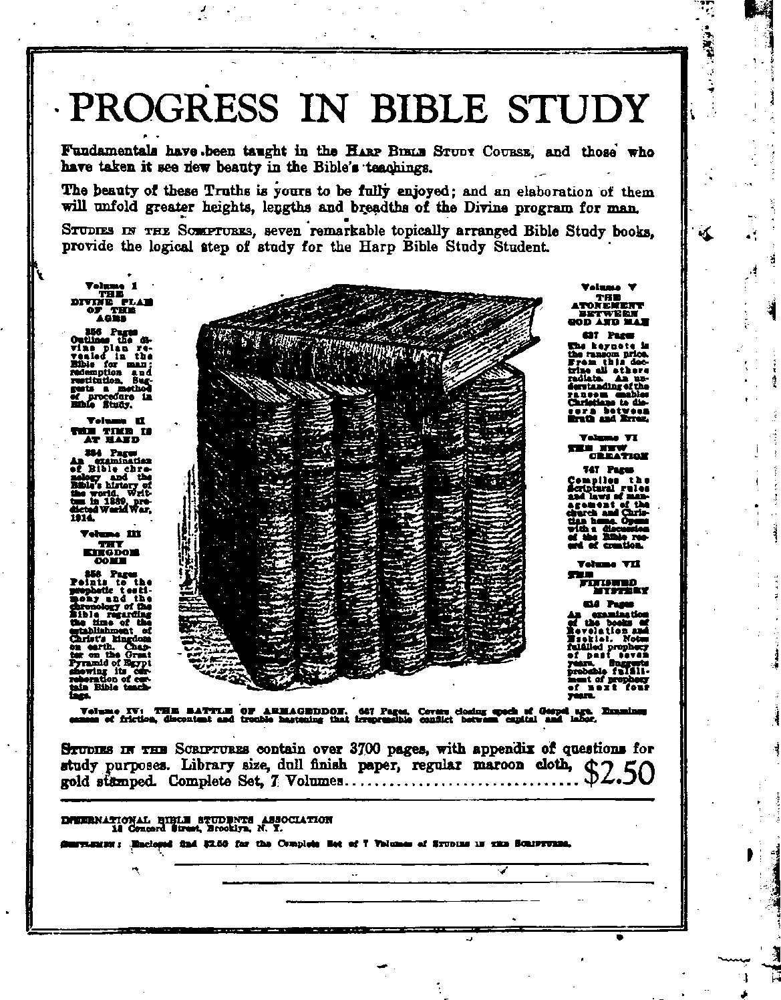

Feb. 28, 1923, Vol IV, No. 99
IBS Published every ether weekat 18 OMcord Street, 124 Walton Street, Brooklyn, N. Y.
Five Cents a Copy—$1.00 a Year Circulation aad foreign orders. KLM
Ml < FEBRUARY, 28 28. 1923 No, 99 CONTENTS •< the GOLDEN AGE
FINANCE—COMMERCE—TRANSPORTATION
Changes in Land Values ——__M>
POLITICAL—DOMESTIC AND FOREIGN
China Near Break----SZS Same Labor Troubles __
Unspeakable Talk Causes Everywhere
Trouble___________8Z3 Fanners aud Laborwa
Uncle Sam Should Not May Unite ..._.......
Step la ______:_______824 Saying Parties Changing
Switzerland Getting Fine 383 Color ...................
Political Conditions in Promises Hard to Keep
South Africa ________SSd Ralph Chaplin. “C. Or. —US
AGRICULTURE AND HUSBANDRY "Grape Vine and fig Tree"
BODY AND HEALTH The Power of Diet over Disease —
Improper Eating to Be Corrected
TRAVEL AND M’SCELLANT
Transformation of Great The King's, Retabltabnmnt S9S
Britain <41 . 3”* Governmental Anarchism 328
London and Other Cities S3fi Financial and Baligioua
Population of Cities Over — Lega --------- >27
Prepared____________ 325 Stewards Hwa) IM
RELIGION AND PHILOSOPHY
The "Interred” Church World Movement
Preachers Coming to Merited Derision
Lack of Faith to Time Trouble .................
People Thinking Treachery of Preachers
Adirondack Mountains I poem > 3M
Editorial set in Walton at and Co Stmt, Brooklyn. N. T., ... 0. 3 A
to WOODWORTH, HUNTINGTON and MARTIN CATTON J. WOODWMTB.......Editor
C ► 'TEWa "* AiwUtahi biHflf
EVENT 1 SMITH . . With Assistant WM f BOWRING) .....Sec'y and the Trust
Copyright and property, Addras: IS Cedar Brat. Brookm. NT.. 0. S. A.
Five Cents a Copy — 11.00 a Year Foreign officer : Britain : 34 Cranley Terrace, Laucwter Gate. London W. 2: : 270 Dundee St. W-
Toronto, Ontario • A Australia • 49o
St. Melbourne, Australia Make remittances to The Golden AM KAged m Canada in Scarboro at Branch, ■Brooklyn, N. Y.
M M tf M S. UH
▼•lame IV Brooklyn, N. Y.. Wednesday, Feb. 28, 1923 ■ Ninba 99
•----------- ---------------- ----------
The Near East By jL. D. Bulman
RISE Near East complication presents fea-tores that are becoming of momentous import to the people of this country. There seems to be a disposition on the part of certain re-ligio-political organizations to make an effort to embroil the United States in the controversy even to the extent of having us offer armed resistance to Kemal Pasha.
Such a step should never be tolerated or encouraged for a single moment. We have but recently finished with the waging of one foreign war, a war in which we gave much and received nothing, neither in prestige nor territorial aggrandizement. Our people are staggering under a burden of taxation that will eventually fall on the backs of our grandchildren to finish paying, and to quote one of our Naval leaders, “We simply cannot stand another great world war,” and that is just what it will develop into if this country attempts to meddle into the affairs of the Near East.
If religious leaders who have been pushing their missionary work, the work of “the hated Christians/' among the followers of Islam — if these particular people want war, let them have it, but at the same time, let them bear the burden of it, and not attempt to hasp that burden upon the back of the general public that wants no part in such an affair.
As greatly as we may deplore the atrocities of the Turks that have been heaped on the Christians in the land of Islam; as much as we may sympathize with them; no man is justified in even suggesting that this country should attempt to Wage another foreign war. It is not a case of what we can do in the premises; it is simply something that cannot be done under any circumstances.
As there is a limit to individual human endurance, so ift there a limit to national endurance, and this nation has about reached this limit
Dr. James Cannon, junior Bishop of the
Methodist Church, in charge of affairs of that organization in the Near East, is reported to have cabled Secretary of State Hughes as follows : “Almighty God will hold our government responsible for its inaction,’’ and goes on to say that our Government should send a delegate to the peace conference whenever and wherever it takes place — “not as an official observer” to make our Government once more “the laughing-stock of the world,” but a “full-fledged plenipotentiary” with powers to say ' what America thinks.
Unspeakable Turk Causes Trouble
FURTHERMORE, according to Dr. Cannon, a mere participation in the conference to ■ be followed by a withdrawal will be of no avail Whatever control of the Dardanelles, whatever . protection of the minorities in Turkey is decided upon should have the forceful participation of the United States. !
“It ia no use for our government to play the ostrich,”
Dr. Cannon ia reported to have said. “It ia no uae for
the State Department to stick its head in the sands
of domestic politics, and say it has no interests in this
business. Millions of church people in the United
States for the past century worked to better the lot of
the people who live in Turkey, Armenians in particu-
1st. We have worked and toiled to this end, and now
on behalf of the churches of the United States, I want
to know if we intend to allow the Turks with impunity,
so far as we are concerned, to continue their massacrea Until all these Christians are wiped out.”
4
Dr. Cannon claims that he has American | evidence to support his belief that the Turks started the Smyrna fires to cover up their looting and massacres. ;
Smyrna horrors on a large scale. Is the United States
going to help England prevent that?
“I know that what I advocate might mean var, bat If necessary it would be justifiable. And it would not be so much of a war. Australia has said that she can said as many soldiers to Anatolia as the Turks would. It ia not sensible nor reasonable to admit that five at six millions of Turks with perhaps one hundred thousand effectives can defy the whole world. If America would join with England in calling the bluff of the Turks and their friends, there would probably be no war."
Much more is reported to have been said by Dr. Cannon, but a sufficient amount has been quoted to prove our first contention.
The five or six millions of Turks to whom reference has been made would prove but a bagatelle in the game if they stood alone; but they do not stand alone in this fight. There is every indication as well as strong evidence to show that Russia would join hands with Turkey in case she is attacked by European and other forces, and Germany would, in all probability, follow Russia’s lead.
Uncle Sam Should Not Step In
ALREADY Russia is reported to be massing her forces along the borders of the Black Sea, fortifying every available position. For what purpose f That is the question that most naturally occurs to the thinking mind.
With Russia, Germany, and Turkey allied into one unifying force, which is not at all improbable, Dr. Cannon, as well as both England and the United States, would find that the situation would not be quite so much of a bluff as he apparently believes. '
England has not acted in such a manner as to inspire the confidence of either France or Italy, neither has she shown very much gratitude toward the United States for our participation in the late World War. When France was on her knees, and England was fighting with her back to the wall, our country went in and, by overcoming almost insurmountable obstacles, broke the morale of the Germans and saved the day for the Allies. Has England shown any signs of gratitude toward the United States for the tremendous sacrifices we made and are yet making!
Let England, France and Italy settle their own differences with the Turks or any other foreign nation with which they may become embroiled; let religio-political organizations, ofi whatever creed or calling they may elect to follow, espouse any cause they see fit; let the Near East, the Far East, or the Middle East go mad and Year each other’s throats in their frenzy, if they will. But the United States must not at all hazards allow itself to be drawn into another war.
Dr. Cannon is reported to be about to sail for America to lay his case before the State department He would do well not to advocate too strongly the embroiling of this country into a war with any other nation. The people are in no mood to stand any such an unheard-of proposition, and might be tempted to take it more seriously than even he thinks.
Those who most strongly advocate war are more often the least anxious to step in and do the actual fighting. That has been proven in several instances during the war just finished.
This is no time for frenzy and hysteria, but the conditions call for calm, deliberate thinking of the best balanced minds that the nation ean produce.
All of this but goes to prove that Senator Lodge builded better than eVen he possibly knew when he threw his powerful aid into the breach to prevent us from entering the League of Nations.
IN Bbuhum they are just now testing a railroad train which is constructed in such a manner that it ean continue the travel on rails in water. This amphibious train is intended for the Belgian^'Congo, so rich in rivers and sea. It consists of a locomotive that draws a number of freight-ear boats, each having a capacity of fifteen to thirty tons. The complete train ean move up to 300 tons freight. In the teat at Petit-Willebroeck the train was sliding
without any noise from the rails into the water on which it was swimming by means of screw propellers, and then it again ascended upon solid ground. The locomotive and each freightcar are supplied on both sides with swimming contrivances connected by girders. In the water the train is propelled by screw propellers, set in motion by the same motor that moves the wheels on land. What difference does it make if the earth’s surface is four-fifths water f
A COMFORTABLE ride in the sleeper from Liverpool brings the American to London, and early in the morning he finds himself in a taxicab bowling along to his destination. What are the first impressions 1 They are most favorable. They could not be otherwise.
London is clean; it is beautiful; it is full of visions that delight the eye.
Is London large! Who can tell!
There are no sky-scrapers. The buildings are about five stories high. There are none of the mammoth twenty- to forty-story buildings that go to make up the great business canyons of New York and Chicago. London seems roomy, and the buildings all appear to be of graceful lines that harmonize well with those of the next-door neighbor. It looks as if the architects had vied with one another to see how well they could make the whole neighborhood look.
There is a quaintness of design quite pleasing and restful to the eye; and apparently no effort has been or will be made to see how imposing any one structure could be made to appear.
London and Other Cities
OW large is London, anyway! The answer shows that there are four Londons: The old City of London, which is only a mile square and has a very small population; the County of London, which has a population of 4,521,685; the metropolitan and city police district, which has 7,251,358 inhabitants; and the proposed Greater London, which designs to include within the Board of Health a total population now residing within contiguous metropolitan territory amounting to 9,201,484. Greater New York, as now constituted, had in 1920 a population of 5,620,048. If Westchester County, New York, and the six adjacent counties of New Jersey which are strictly metropolitan could be included, the population of New York would be 6,077,655.
As few Americans have any adequate idea of the number or the size of the large cities in Great Britain, and as many Britons know next to nothing about the great cities of the United States, we give herewith a table in which are shown the peculations of the forty-three largest cities in each country : -
Population of Cities Compared
|
OgBAT Bxhaih |
United States |
|
London _______7,251,358 Glasgow ——1,010,850 Birmingham ____910,000 Liverpool _______781,948 Manchester______778,229 Leeds __________480,297 Sheffield _________479,474 Belfast __________386,947 Bristol __________380,000 Edinburgh ______333,833 Dublin _________304,802 Bradford _______294,501 Hull ___________284,357 Newcastle_______278,107 Nottingham _____270,000 Portsmouth _____245,827 Leicester________245,000 Stoke-on-Trent __234,534 Salford___226,225 Plymouth__213,759 Cardiff __________204,436 Bolton __________184,863 Dundee_________181,800 Swansea--170,000 Southampton ____165,000 Aberdeen _______163,891 Birkenhead _____152,345 Sunderland 149,9,13 Oldham ________147,483 Derby __________132,461 Middlesbrough___132,444 Blackburn ______131,246 Brighton _______131,237 Stockport _______130,868 Gateshead .__125,965 Norwich ________124,997 Southend-on-Sea 120,000 Coventry________119,023 Preston----------117,277 Huddersfield ____107,821 St Helens______105,000 Halifax ________104,000 Burnley ________102,391 |
New York ____5,620,048 Chicago ________2,701,705 Philadelphia ___1,823,779 Detroit __________993,678 Los Angeles ____876,560 Cleveland _______796,841 St Louis ______772,897 Boston _________748,000 Baltimore_______733,826 Pittsburgh ______588,343 Buffalo __________506,775 San Francisco ___506,676 Milwaukee ______457,147 Washington _____437,571 Newark _______414,524 Cincinnati ______401,247 New Orleans ___387,219 Minneapolis _____380,582 Kansas City_____824,410 Seattle __________315,312 Jersey City _____298,103 Rochester, N. Y. 295,750 Indianapolis ____314,194 Portland, Ore. __258,288 Denver _________256,491 Toledo _______243,164 Providence .....—237,595 Columbus, Ohio__237,031 Louisville_______234,891 St. Paul _______234,698 Oakland ________216,261 Akron__________208,435 Atlanta_________200,616 Omaha ________191,601 Worcester_______179,754 Birmingham 178^806 Syracuse ________171,717 Richmond ______171,667 New Haven____162,537 Memphis _______162,351 San Antonio____161,379 Dallas___________158,976 Dayton _________152,559 25 other American cities each over 100,000—3,014,949 TOTAL____27,728,953 |
|
TOTAL, all cities over 100,000—18,593,809 |
The American’s engagements are such that he has two days which he can spend in seeing London; and he manages within that time, in the company of a gentleman who seems packed full of information on all subjects, to see the following:
The King’s Establishment
Buckingham Palack is the London Home of the British sovereign, since Queen Victoria ascended the throne in 1837. The palace takes its name from the Duke of Buckingham, from whom it was purchased by the king in 1762. It takes a good-sized equipment to keep the king going. In his own private bookkeeping and correspondence department there are thirty-nine officials, including the usher of the sword, the surveyor of pictures, the master of music, the poet laureate, the gentleman of the cellars, and the clerk of the cellars.
To take proper care of his spiritual interests when he is in various parts of the realm there are fifty-four chaplains of all sorts, one of whom is an official organist and composer. To take care of his physical health, or to make sure that he is dead when he is dead, there are twenty-three physicians, including three oculists, one laryngologist, one dentist, one anaesthetist, and one coroner. To provide against his getting tangled up in the ceremonies there are forty-nine officials in the ceremonial department, including one examiner of plays, one bargemaster and one keeper of the swans. To look after bis stables (just recently changed into royal garage) there are thirty-one officials.
The king is the official head of England and the official Defender of the Faith of England, which is embraced in the thirty-nine articles of the Anglican Church. He is also the official head of Scotland and the official Defender of the Faith of Scotland, which is embraced in the Westminster Confession of the Presbyterian Church. Every time he goes to his Scottish castle at Balmoral, in the Scottish Highlands (and it is a favorite resort of royalty), he officially changes his faith at the Scottish border, going and coming.
The king cannot visit the old City of London (the ancient 3ity, one mile square, which lies within the great metropolis) because one of his forbears borrowed some money from that city many centuries ago and forgot to pay it; that is, he cannot visit the city, theoretically, until the Lord Mayor comes down and meets him at a certain street corner (a very ordinary street corner) and bestows upon him the freedom of the city. This the Lord Mayor does regularly as often as the king wishes to visit ancient London.
The queen requires considerable attention also. In her own special end of the concern there are five officials and sixteen ladies of rank, not counting the servants who actually do the work. The annual salary or allowance made for the support of the royal family is £613,000, or about $2,758,500.
St. James’ Palace is the official London residence of the Prince of Wales. There are six officials in his personal establishment. Royal levees are held here during the season, and representatives of foreign governments are still accredited to the Court of St. James. St. James’ Palace was built by Henry VII, over four hundred years ago.
Kensington Palace is the place where Queen Victoria was born. Relatives of the king are now quartered there. Kensington Palace, as well as Buckingham Palace, borders Hyde Park, upon the edge of which public orators hold forth every Sunday afternoon and every pleasant evening on any subject of human interest. Side by side were polite and refined advocates of Esperanto, an uncouth booster of the liquor traffic, a Salvation Army hell-fire artist, and speakers on behalf of the so-called Bible Witness, Wesleyan Mission, and a half dozen other beliefs.
Governmental Accessories
THE Houses of Parliament are superbly beautiful buildings, completed in 1850 at a cost of about £3,000,000. The tower of the House of Lords is 336 feet high and the Clock Tower of the House of Commons, which houses the “Big Ben” bell, 15$ tons in weight, is 320 feet high. These buildings are open to visitors on Saturdays only, and were merely viewed from the outside.
The British Premier’s official residence, 10 Downing Street, is a very ordinary-looking place. In fact, on the outside it has the appearance of a ramshackle, old tumbledown that should be pulled down. It is preserved because it is old; and one of the British Government’s
games is to get the people to preserve everything old and to reverence it, in the hope that in this way no close scrutiny shall be made into the divine rights of kings, clergy, financiers, or others who have the people’s real interests under their feet.
The Tower of London makes the heart sick at the cruelties of man. Here, chiseled in the wall of the cell in the Bloody Tower, the 'American saw, "He that endureth to the end shall be saved, 1553,” and “Be thou faithful unto death, and I will give thee a crown of life, 1554”; and he thought of the victims of Bloody Mary, England’s Roman Catholic queen from 1553 to 1558. Here were the headsman’s block and axe, the rack wherewith to pull the living apart, the iron collar for slowly choking to death the victims of the queen’s wrath, the thumbscrews wherewith to crush the fingers one by one. Here was the site upon which Anne Boleyn, Katherine Howard, and Lady Jane Grey were executed; here were the crown jewels, the diadem of James H, and the armors of Charles L James II, and Henry VIII, the latter weighing eighty-one pounds.
The Horse Guards were the headquarters of the commander-in-chief from 1750 to 1904. The brilliantly dressed sentinels still sit on their horses in the archways in front of the horseguard parade grounds, where they or their predecessors have sat for 170 years. The changing of the guards at 11 a. m. and 4 p. m. is a picturesque ceremony. Across the street is the window through which Charles I stepped to the scaffold in 1648.
Here (in the neighborhood) is the hall in which the Scottish hero William Wallace was tried, and where it was hoped to try the demon-obsessed Kaiser Wilhelm II. Here is the Old Curiosity Shop, at No. 14 Portsmouth Street and still in use as it was in Dickens’ day. Here is Paternoster Row, the great street for Bibles and ecclesiastical literature. Here is the Drury Lane Theatre, which is patronized by the royalty because it is old, but which is really an old out-of-date auditorium. And here is the noble Thames, 210 miles long, navigable for small boats 160 miles from its mouth.
Scotland Yard is the world-famed center of British police activities; and although the head of the Yard did recently eat some poisoned candy that was sent to him through the mails, and kithough some one did come near stealing the queen’s famous Cullinan ‘diamond, which is stored at Scotland Yard as being the safest place in London, yet London is one of the most crime-free places on earth. It has less than two felonies per year per thousand of the population. What American town of a thousand population can boast of a better record than only two arrests per year!
Financial and Religious Legs
THE Bank of England, not open to sightseers, is dark and forbidding in appearance, and is apparently not such a place as anybody would wish to see even if he had the chance. It was founded in 1694; and although it has always been a joint-stock company it has always been closely connected with the government — the financial leg, so to speak. “The Old Lady of Threadneedle Street” takes its nickname from a woman whose brother was hanged for forgery in 1809. She became crazed with grief, and every day for long afterwards visited the bank to inquire for her missing brother. From these daily visits the nickname which had attached to her was transferred to the bank itself.
Westminster Abbey, near the House of Parliament, is another of the legs upon which the British Government stands—its superstitious leg, so to speak. This building was begun in 1050, five hundred years before the Reformation, and was completed in 1760. Here the sovereigns are crowned; and to be buried here is supposed to be the height of earthly glory. This superstition is carefully cultivated; and the place is jammed full of statues and tablets of those who have made a great name for themselves in the world, and who are adjudged to have been specially helpful in building the British Empire.
St. Paul’s Cathedral, completed in 1710, is a truly remarkable building, the masterpiece of Sir Christopher Wren, the great architect. The inner cupola is 218 feet above the floor, and the cross on the dome is 365 feet above the ground level On the plaza in front of the cathedral hundreds of pigeons come daily to be fed, and they have made the front of the cathedral a sorry-looking place.
St. Mary leBow Church is so-called because the original church was built upon arches or bows. Since the seventeenth century tradition has it that any one born within the sound of the bells of this church is a “Cockney,” fated to wrestle at a disadvantage in the proper placing of hie aspirants for the rest of his life. In other words, from hereabouts come the Englishmen who “drop their aitches.” This church was one of the buildings restored by Sir Christopher Wren after the great fire. On a building in the neighborhood is a sign, “The oldest building in Cheapside; it withstood the great fire in 1666.”
“The Monument” commemorates the great fire of London, which broke out on September 2, 1666. The fluted Doric column is 202 feet high, surmounted by representations of flames forty-two feet in height There is a fine view of London from the gallery at the top of the column. There are many other interesting monuments in London. The Cenotaph (literally “empty tomb”) is to the memory of all the boys ushered into death during the World War; it was unveiled in 1920, and its base is always fresh with wreaths from those that mourn. Such cenotaphs are now to be found all over the Isles. There is a monument to Edith Cavell, the nurse slain by order of the German militarists; and there is Cleopatra’s Needle, sixtyeight and one-half feet high, erected in 1878 on the Thames embankment. The surrounding stone-work bears scars from an air raid. In Parliament Square is a monument to Beaconsfield, the first and only Jewish Premier of Britain; and a statue of Abraham Lincoln faces Westminster Abbey.
London Bridge is now but a name. Until the year 1750 there was but one bridge across .the Thames; now there are nineteen. The most famous London bridge is not the old original London Bridge, but is the second, or Westminster Bridge, which was built in 1750. It leads from Westminster Abbey and the Houses of Parliament on the north side of the river to St Thomas’ Hospital and other important buildings on the south side.
Tracesof the Boman occupation of London dating from the first century are still to be seen by the curious. The curious are like the poor — they are everywhere, and no more so Gian an American in London. There are portions of the Roman wall'of Londinium still in place in the yard of the General Post Office; also near the southeast corner of the White Tower of the Tower of London, and there are remain* of old Boman baths at 5 Strand Lane.
The British Museum
WE HAVE saved the best until the last; and one entire day is devoted to a trip through that greatest of all educational institutions, the British Museum. As we go thmngh the Museum we have in hand the best of all guides to its treasures, F. G. Janeway's “British Museum with Bible in Hand," from which copious notes and excerpts are taken for the following:
In the Third Boom (North Gallery) is * sculptured slab upon which appears the name and title of Amraphel, king of Shinar, mentioned in Genesis 14:1. Here are boundary stones of Berodach-baladan, mentioned in 2 Kings 20:12. These stones, many of them, bear curses against those who remove them, and are in line with the Mosaic law, “Cursed be he that removeth his neighbor’s landmark.” (Deuteronomy 27:17) There are scores of Babylonian bricks bearing the names of the Bible characters Shalmaneser, Sargon, Sennacherib, Esar-haddon, and Nebuchadnezzar; and there are inscriptions, bearing the names of Cyrus, Darius, Xerxes, and Hystaspes. There are letters from the governors of Tyre and Aske-lon; there is a letter to the kings of Canaan; and there are several letters of Amraphel, king of Shinar. (Genesis 14:1) These letters positively disprove the claims of the Higher Critics, once made, that writing was not in general use in the days of Moses, and that therefore Moses never wrote the books attributed to him
On the Northwest Landing there are sculptures brought from Carchemish, the ancient Hittite capital, putting to flight the Higher Critics who less than a century ago were proudly claiming that the record of 2 Kings 7:6 could not possibly be correct because there were no such people as the Hittites.
In the Assyrian Transept are two humanheaded bulls, with wings of birds. Between the legs of these bulls are cuneiform inscriptions confirming the Bible account of 2 Kings 18: 14-16 of King Hezekiah's paying tribute to the king of Assyria. In this transept is a large sculptured slab representing the king Sargon, spoken of in Isaiah 20:1. The existence of this king was for so long doubted by the so-called Higher Critics. It now transpires that the “they” of 2 Kings 18:10 and “the king of Assyria” of 2 Kings 18:11 refer to this Sargon, and not to Shalmanezer, previously mentioned in the account Sargon completed the work which Shalmanezer had begun. As usual, the Word of the Lord is found correct, and the suppositions of its critics are found to be without foundation.
Egyptian Bible Relict
IN THE Southern Egyptian gallery is a statue of Pharaoh Hophra, referred to in Jeremiah 44:30. Here is a statue of Hapi, the god of the Nile. The turning of the waters of the Nile into blood at the command of the Lord was a direct blow at the supposed claims of this god for worship.—Exodus 7:20, 2L
In the Egyptian Central Saloon is b huge head of Rameses II, weighing over seven tons. It is this Pharaoh of the Oppression, who reigned sixty-seven years, whose death is reported in Exodus 2:23. In the center of the saloon is a colossal beetle, symbol of the Egyptian god Khepera, and a proof that the Apostle told the truth in Romans 1:22, 23 respecting the objects of human worship.
In the Second Egyptian Room is a portrait of King Seti I, taken from his mummy, now at the Imperial Museum in Cairo. His features are such as to show that he was a noble-minded man. It is believed that it was his daughter who rescued Moses from the Nile. He was the father of Rameses II, the Pharaoh of the Oppression.
In the Third Egyptian Room is the mummy of a musician buried with his cymbals, just as the Scriptures record that the warriors of old were buried with their swords — “gone down to hell [the grave] with their weapons of war, and have laid their swords under their heads.” (Ezekiel 32:27) In the same room is a case in which at the feet of a mummy, a former king, are paintings of his enemies, those who were “put under his feet,” as Christ is eventually to “reign until he hath put all enemies under his feet.”—1 Corinthians 15: 25.
In the Fourth Egyptian Room are wall cases of mummified animals which the Egyptians worshipped. Gazing at these false gods, one can better understand the command against the making of “a graven image the similitude of any figure, the likeness of male or female, the likeness of any beast that is on the earth,” etc. (Deuteronomy 4:15-20) In Exodus 5:6 the “officers” there mentioned are literally scribes; and in this room are samples of the very writing materials, pens, tablets, etc., which they used in making a record or “tale” of the nunu her of bricks made by the Israelituh slaves. In this room also are signet rings, one of which might possibly be the very one that Pharaoh took off and placed upon the hand of Joseph. 1—Genesis 41:41, 42.
In the Fifth Egyptian Room are exhibited sandals, some of which are probably similar to those which Moses was commanded to put from off his feet (Exodus 3:5); and there are bricks nine inches wide by eighteen inches long, bearing the stamp of Barneses H, the Pharaoh of the Oppression, which were without doubt made by the Israelites in accordance with the account given in Exodus 5:5-12.
In the Sixth Egyptian Room are hand mirrors such as were melted down to make the laver of brass which stood in the court of the tabernacle (Exodus 38:8); and there are samples of eye paint such as Jezebel used when Jehu came to see her,—2 Kings 9:30.
Relict of Idols Named in Bible
ON THE wall of the Nimrod Gallery is a sculpture of the god Dagon, the fish-headed deity of the Philistines. It was in the temple of Dagon at Ashdod that the Philistines placed the ark of the Lord when they had captured it, with the result that “when they arose early on the morrow morning, behold Dagon was fallen upon his face to the ground before the ark of the Lord; and the head of Dagon and both the palms of his hands were cut off upon the threshold ; only the stump [fishy part — margin] of Dagon was left him.” (1 Samuel 5:4) It was the temple of Dagon at Gaza that Samson destroyed at the time of his death.—Judges 16: 21-30.
In the Assyrian Saloon is a banquet scene, showing the custom of the ancients of reclining while at their meals, as Jesus and John reclined during the last supper. (John 13:23) The head of the king of Elam is shown hanging from a tree, as Saul’s head was hung by the Philistines in the house of Dagon. (1 Chronicles 10:10) Theit is a large wall inscription of Sargon in which are mentioned both Judah and Hamath.—2 Kings 17:24.
In the Nimrod Gallery is a slab showing the Asherah, the sacred tree of the Assyrians, mentioned in 2 Kings 23:6, 7 and in many other places. Here is a sculpture of the goddess Ishtar, called in 1 Kings 11:33, "Ashtoreth the goddess of the Zidonians.”
In the Nimrod Central Saloon are two very erect statues of the god Nebo, designated in the inscription as “the lofty intelligence and the lord of tablets,” and associated in the inscription with Bel, another Assyrian god. In view of these facts how startling and how expressive in the prophecy of Isaiah 46:1, “Bel boweth down, Nebo stoopeth.... They stoop, they bow down together; they could not deliver the burden, but themselves are gone into captivity.1* —Isaiah 46:1, 2.
Relict of Hebrew King»
IN THE Nimrod Central Saloon is the black obelisk of Shalmaneser II, upon which are mentioned both Jehu and Hazael, the important Biblical characters referred to in the prophecy of 1 Kings 19:15-18 and in many other places in Bible history. Jehu is named and illustrated as paying tribute. On another relic of Shalmaneser are mentioned the names of both Ahab, king of Israel, and Benhadad, king of Syria, whose covenant of 1 Kings 20: 34 is thus confirmed. When the latter relic was being excavated, Sir Henry Rawlinson read from the inscription that it had been set up beside another monument erected by Shalmaneser's father and predecessor, Ashur-nasir-pal The excavation proceeded; and the monument erected by Ashur-nasir-pal was discovered and is now in the British Museum, standing beside the one which located and identified it after the lapse of twenty-seven centuries.
In this saloon are many Assyrian monuments mentioning Tiglath-pileser, one of the oppressors of Israel and Judah. (2 Kings 15: 28, 29; 16:7-18) Here also are wall sculptures showing the armor and shields similar to those mentioned in 1 Samuel 17:41, and battering rams similar to those mentioned in Ezekiel 4: 2 and 21:22, 27.
In the First Room (North Gallery) there is the Moabite Stone, containing a record of wars waged by Mesha, king of Moab, who lived in the days of the Israelitish kings Omri, Ahab, and Ahaziah, and who is mentioned in 2 Kings 3:4 as paying tribute to Ahab; and the stone itself narrates how Moab was oppressed by Omri and by Ahab his son. There is here the original slab prepared by the order of King Hezekiah narrating how the water was brought into the pool of Siloam, as recorded in 2 Chronicles 32:30 and 2 Kings 20:20.
Sennacherib and Hezekiah
IN THE Assyrian Saloon is the celebrated bas-relief taken from one of the royal palaces in the vicinity of the city of Nineveh showing King Sennacherib seated on his throne with representatives of defeated people standing or kneeling. The inscription reads, “Sennacherib, king of hosts, king of Assyria, sat upon his throne of state, and the spoils of the city of Laehish passed before him." This successful siege of Lachish is mentioned in 2 Chronicles 32:9, and is implied in 2 Kings 18:14.
In the Fourth Room (North Gallery) is the Taylor Cylinder, whereon Sennacherib records his exploits against King Hezekiah, but modestly fails to make any mention of the great disaster which overtook his army of 185,000 men, slain in one night by the angel of the Lord. Like some other people he bragged only where he could brag. In this room are the well-known Babylonian tablets giving the Babylonian accounts of the Creation, the Tower of Babel, and the Flood. Without a doubt these accounts, which are mingled with legends of Pagan mythology, are plagiarisms, incorrect copies of the Biblical story.
In the Nineveh Gallery King Sennacherib (mentioned in 2 Kings 18:13) is shown supervising the erection of one of the Assyrian gods, a large bull The slab shows the inclined planes of earth, the ropes, pulleys, levers, rollers, and taskmasters whipping the slaves at the work. In one of the slabs Jewish features are plainly discernible, and the latter part of the word Jerusalem appears on one of the inscriptions.
In the Nimrod Gallery is a. sculpture of the god Nisroch, concerning whom we read: “And it came to pass as he [Sennacherib] was worshiping in the house of Nisroch his god, that Adrammelech and Sharezer his sons smote him with the sword; and they escaped into the land of Armenia, and Esarhaddon his son reigned in his stead.”—Isaiah 37:37, 38.
The prophecy of Nahum is declared to be a prophecy concerning Nineveh; and in Nahum 3:13, where it says, “The fire shall devour thy bars,” and Nahum 3:15, where it says, “There shall the fire devour thee,” the prediction seems to be made that Nineveh is to be destroyed by fire. And sure enough I Almost all the sculptured wall-slabs taken from the palaces of Sennacherib and the other Assyrian monarchs give evidence of having been fractured by fire and heat.
In the Third Room (North Gallery) there are barrel-shaped cylinders recording the building operations of King Nebuchadnezzar, mentioned in Daniel 4; 30; and there is a cylinder upon which King Cyrus records the conquest of Babylon “without battle and without fighting” in confirmation of the Biblical account of its fall on the night when Belshazzar held his feast.—Daniel 5.
Relict of the Time of Christ
IN THE Second Room (North Gallery) there are tear bottles from Hebron, such as are referred to in Psalm 56:8; and there are lamps such as Christ mentioned in the parable of the Wise and Foolish Virgins.
In the Room of Greek and Roman Life there are samples of coins mentioned in the Bible, the shekel, half shekel, the stater (such as was found in the mouth of the fish—Matthew 17: 24-27), and the denarius or “penny,” mentioned in several places. There is here a scourge loaded with bronze beads such as was used by Pilate in scourging our Lord, and such as was five times used upon St. Paul. Under the Roman law no man could be given more than forty stripes, in which respect it was superior to the English law in effect at the accession of Victoria to the throne of England. At that time it was permissible to flog a British soldier with a thousand lashes, and many were actually flogged to death. When Victoria married, it was proposed to do something for the people; and so a law was passed forbidding a flogging of more than fifty lashes. Queen Victoria protested against signing this law, declaring that the only way the soldiers could be kept obedient was by flogging.
Here are samples of Greek armor, made of brass, andreminding os of the aptness of Nebuchadnezzar’s dream in which the belly and thighs, representing the Grecian empire under Alexander, were made of brass. But there are no samples of Roman armor. It was made of iron and has long since rusted into oblivion, even as the iron legs of the image, the Roman Empire, will be completely obliterated when the kingdom of Christ shall have fully come.
In the Room of Gold Ornaments and Gems there are beautiful cameos and intaglios, portraits of all the Cesars mentioned in the Bible —Augustus, Tiberius, Claudius, Nero, Titus, and Vespasian.
in the Roman Gallery we see an ancient bust of that Augustus Cesar in the reign of whom there went out a decree that all the world should be taxed (Luke 2:1); also a bust of that Tiberius Cassar,' in the fifteenth year of whose reign John the Baptist began his ministry. (Luke 3:1) It was Tiberius to whom the Pharisees referred when they laid the trap for Jesus, and coming to Him asked: “Is it lawful to give tribute to Caesar or notT” And it was the face of Tiberius which looked at the inquirers when He said to them: “Whose is this image and superscription f” and “Render unto Caesar the things that are Cesar’s.”
Here is the bust of that Claudius Caesar, in whose reign there came to pass the dearth predicted in Acts 11:28. This was the Caesar that commanded all Jews to depart from -Rome, among whom were Aquila and Priscilla. (Acts 18:2) Here is the bust of Nero Caesar, the brute to whom Paul appealed, as recorded in Acts 25:11. St. Paul mentions this appeal in 2 Timothy 4:16, 17.
Here, too, is the bust of that Vespasian Caesar whose overrunning of the Holy Land was prophesied by Moses in Deuteronomy 28:49 and by the Lord Jesus in Luke 21:24; and near it is the bust of his son Titus, who completed the work begun by his father, resulting in the complete subjugation of Judea in A. D. 73.
Relics of Apostolic Times
IN THE Ephesus Room are some of the immense pillars, and the huge bases on which they stood, which went to make up the magnificent temple of Diana, the Ephesian, referred to in Acts 19:23-41. It was on the occasion of this riot that St. Paul nearly lost his life (1 Corinthians 15:32) in an effort to calm the demon-obsessed crowd which, for the time, were acting more like beasts than humans.
In the so-called Elgin Room are portions of the beautiful sculptures taken from the Parthenon, the Temple of Athene (or Minerva) at Athens. It was some of these very objects that St Paul beheld when he saw “the city wholly given to idolatry.” (Acts 17:16) It was some of these very things that caused him to proclaim the self-evident truth that God is not to be thought of in terms of anything “like unto gold, or silver, or stone, graven by art and man’s device.”—Acts 17:29.
In the Room of Inscriptions there is a cast of a stone dug up by excavators on the Temple Area in Jerusalem and containing seven lines in Greek forbidding gentiles, on pain of death, to enter the Sanctuary. With, this in mind one can better appreciate the dangers to which St. Paul was subjected when falsely accused of having brought Trophimus within the temple area.—Acts 21:29.
In the Manuscript Boom there is the Codex Alexandrians, one of the three earliest and most important MSS. of the Holy Scriptures. There is also a copy of the Pentateuch (the Five Books of Moses), made in Syriac in A. D. 464; and there is Wycliffe’s Bible, the first English Version of the Holy Scriptures, bearing date of the 14th century A. D. There is also a document whereby King John gives England and Ireland to the Holy Roman Church in return for the protection of St Peter and his earthly partner, Pope Innocent III. [To be continued]
SWITZERLAND is the neatest little republic in all Europe. The grandeur of the high mountains, the blue sky, and the placid landscape seems to have imbued the soul of that people with freedom, politically and economically.
On December third the Swiss voted upon the most "radical” law that the country of William Tell probably ever considered. “Radical,” you know, means “getting at the root of a thing”; and Switzerland is one of the first nations to realize that to do any real good, the root, origin, or cause of a thing, is the real, proper thing to "get at.” Switzerland proposes a levy on capital direct — not on income tax, mind you, under which system the capitalist can simply profiteer the more on the people and eventually make them pay his income tax, but directly on the wealth itself.
Rich Man’a Trouble's Are Sure
THE levy runs from eight to sixty percent of his principal, beginning with fortunes over 80,000 francs. Those under that figure are exempt.. Over here 80,000 francs, or the exempt property, would be about $5,000. Fortunes of $100,000 will be mulcted about fifteen percent. For every $6,000 over that figure the rate increases two percent until $336,000 is reached, when the rate of increase declines to one percent? It Hses again later, and when the fortune amounts to one and one-half million dollars the tax is forty-nine percent. Fortunes of $2,000,000 and over must surrender sixty percent.
This is somewhat of a compromise between
By E. Godlove Krone, D. C., N. D.
the American unbounded, unlimited greed law, which often means the survival of the most unscrupulous, and the Australian law, which limits its citizens to $500,000. Yet it is an important step. Humanity is slowly recognizing the fact that one of its greatest enemies is not the L W. W. and his ilk, but the never-quitting, never-satiated plutocrat that makes the L W. W. The kings, the dukes, the monarchs of finance, and the would-be such, in all countries and all climes, have always been the breeders of wars, the manufacturers of poverty, and of practically every misery on earth, either by their own oppressing, or by setting an example of never-satiated greed to others.
The ultra rich are not only themselves unhappy, but they have turned a fair world into a vale of tears. 12,144 suicides were officially reported last year. That figure is estimated as being about two-thirds of the total Very few of those suicides transpired in Switzerland or Australia.
One Man's Gain, Another's Loss
WHERE the power of selfishness reigns unchecked we find the greatest misery; for what is one man’s gain appears in this world to be the other man’s loss, and when a few plutocrats swell up, millions suffer the sting of want. The Swiss have the big idea. What the people of most countries need is to get together, make laws like the Swiss, and put a check on selfishness. We are glad to see the people in a few nations of the earth making a start to wake up.
IN THE November 8th issue of The Golden Age there appeared an article entitled, “The Golden Role in the Cement and Marble Business”; and in a previous issue an article on a system of forming the management of a railroad.
These articles both appealed to me as an effort on the part of liberty-loving people to help in making things better for their fellow men, to release from the bondage that hangs over us all regarding the disposition of this world’s goods and necessities. It is a subject that I have pondered ever since my boyhood days. I mean a system whereby the wealth producers (laborers) would be enabled to get their rightful, proportionate share of that wealth, and under which the so-called capitalist would be shorn of liberty to grind down his fellow man and to grow bigger just because he is already big.
Mr. Drummond seems to say, in substance, that to form a corporate body of men under three headings, viz., money, brains, and brawn, each with a predetermined and fixed rating of capitalized value, would be a system whereby the capitalized interests would not have a chance to become so oppressive to the under classes; that on the whole the scheme would result in a more nearly equal distribution to the three classes, of the net proceeds of the commodity in which they are dealing.
This plan, it will be remembered, calls for a statement like this:
Money capital in plant equipment_______$1,256,000
Brains capital, in the form of ten executives, each receiving $5,700 per annum, which is 5% on a capitalized value of $114,000 each, or for ten executives_______________________ 1,140,000
Brawn or Labor capital, one hundred in number, who are stated as a class not to be so capable and rated at an average of $1,500 per annum each, this being 5% interest on $30,000 capital per laborer; and for one hundred of the common, lea* capable class, it totals__________________._____________ 8,000,000
TOTAL____________________________$5,390,000
The net earriings of the concern are divided among the three respective classes of shareholders, pro rata, according to the number of shares each individual hold*.
If they declared a 5% dividend, Mr. Capitalist would get 5% on $1,256,000__________$62,800
The man of brains would get 5% on $114,000__5,700
The man of brawn, the wealth-producer, who does the labor, who has the strong back, who is paying for a home against interest, to house a little brood whom he loves, gets his share of 5% on his $30,000_________________________ 1,500
Everything is supposed to run along lovely under this plan. It is supposed to be equal with all concerned, and no one should have any objections to speak of.
Capital income ijtfifl/MM
Brains income 5,700
Wealth producer -____ 1,500
Here it is; and I would ask Mr. Drummond, with all due respect to his efforts in this creditable direction, where does the equality come in on this plant These are his own figures arranged in his own way. He also adds that if by this scheme one could save something ahead he could become a capitalist, and put a little back into the business, in the capitalist class, on which he could draw his five percent. Well, we all know of course that the laborer will labor for evermore, trying to pay for that home. His future outlook toward laying a foundation of insuring himself against the rainy day is dim indeed. '
Money’* Present Advantage*
THE gentlemen of brains would likely be able to lay a part of his income into the class above him, and start on the merry road to capitalism, sucking up nourishment from the laboring class below him. On top of this, we see that the capitalist can place nearly all of his $62,500 dividend into the concern again, and draw dividends, and multiply, and draw and multiply till the cows come home.
I would ask: Is there anything in this plan that is different from the way things have been running for centuries and with the same evil effects and all the rest of the regime that is now old and soon doomed to goT Mr. WealthProducer, going up to big business, said: “You have slipped it over me long enough; and now I myself am going to take the management over, capital and all, and distribute the proceeds among those who produce it; and not a part of it will satisfy me, nothing but all of it. for I produced all of it The Scripture says: 'As a man soweth so shall he reap.’ I have sown the seeds of industry for a long time; but you did the reaping, and gave me only the gleanings. Now, after this I will do the sowing and the reaping too; and if you want any wheat, just get in line and sow some and reap it yourself.”
SM
In European countries capitalism is becoming less and less of an object; for it is being taken away from its owners just as surely as time rolls around. Income taxes are fast absorbing a large slice of the proceeds from securities; every time a death occurs a large percent of the substance of a will is taken. Sales percents also go toward taking the joy out of the old game. In Russia they took it all in a night, and that was all there was to it The Scriptures told us that they would do this. The job is not yet finished; but, depend upon it, it will be, and right on time.
The reader may ask: *How about getting the necessary capital to start this business! It is needed or it would never start' That's just it, exactly. It is very probable in this old order that, with its present arrangements and its financial fabric woven the way it is, it would never start unless a fat $62,500 per annum was offered. Mr. Capitalist would exercise his right in law and hold his nice $1,256,000 of wealth, which the old order says belongs to him, to do with as he chooses.
I would also ask: Where did Mr. Capitalist obtain this large quantity of hard-earned value! He is no stronger in the back, nor has he greater brain ability than most wealth producers; and, of course, he could not earn it in a lifetime several times over, and keep a large family, and pay for a home, and start with nothing, and do it on $1,500 per year.
I think that we can all answer the question. He got it from the same wealth-producer class, the brawn class, who are not worth much in earning value according to the estimate of the present old order. He got it from the men who labored before him and gave it to him. The old order, laws, and arrangements, such as dividends on stocks .and bonds and securities with private ownership, said that it was his. It is not true; but it was said just the same, and we have all believed it till now. The first point in law is the right of private ownership, not so much harm in itself, however, but all values are in jeopardy or are at stake to satisfy interest or usury. If you fail to pay interest on , your mortgage they take all the past payments as a penalty, and then take the property to make themselves safe.
Robberies Soon to Cease
THE Scriptures tell us that a man is worthy of his hire. That means only one thing, and there is no dodging the issue. If he is worthy of his remuneration, then he should be paid his remuneration, all of it to the uttermost farthing, so that there will be no farthings left for others to pick up. We cannot have the fruits of his labor and retain a part of the price also and get away with this thing much longer. Our Creator gave Mr. Capitalist several hundred years, nearly the whole range of history, to show what he would do in justice to his fellow men; and he fell short. So now in 1914 God declared against the system, and has sent His only begotten Son, to rule over things and to dean out the whole plant, root and branch, of the whole failure, after which He will start a dean sheet, in a new way, a fair and equal way, a way wherein it will be possible that "every man shall sit under his own vine and fig tree, and none shall make him afraid,” nor sap the fruits of his labors.
Neither can we see where the fairness is in giving one man $5,700 and another $1,500. It very apparently belongs to the inequalities of the old order. It would seem that one man could hardly, in all fairness, be above or below another in any station of life in the new order; and we may be glad indeed to see the new order making preparation to come in, while the old is slipping away right before our eyes, almost without our being aware of it. This disintegration is plain to be seen now by looking back to 1914.
If one wishes to formulate an organization scheme to further equality in industry, and the effort would be great and noble, it will never be used for that purpose if it has for its foundations any part of the old Order. But if it fully conforms to the new order just now coming, it surely would be accepted and go ahead unlimitedly. It says: "Those things which can be shaken will be shaken”; and anything that is unequal, unbalanced, and unfair can surely be shaken. .
Man, of course, is not formulating this new order; and the proper thing to do it to recognize its requirements and try to conform to them. Then there need be no worry about their acceptance or success, with that purpose in view. Christ alone can clean out the old corrupt systems; and He will then start with His own, a different, a fair, and abundant system which, we are told, will be something new to us and greater than we thought.
I really believe that an industrial arrangement can be worked out along the lines that are set ahead of us and for us. I believe that there will be many of them and perhaps different each from the other. Of course, if they are started off now under this arrangement there would likely be opposition on every hand; but this opposition would grow weaker as the old order grew to a close. It would be like a struggle for a birth; but even at that, it could do great good in helping to enlighten the people to the faults of the present system, and thus be a helping hand in unloading this time-honored, oppressive system from the shoulders of the people, and throwing it aside as a thing that has served its purpose, and has shown Man that after all he cannot rule himself and be at peace.
[Mr. Leonard seems to think that it would be very nice if the general manager would unselfishly throw his whole energies into his work, and work for the same compensation as the ditch-digger. But the question is not so much, Would it be nice if he would do it, as it is, Would he do it? or would he go somewhere else, where he could obtain for his greater ability and greater energy a greater share of the prospective towards? And as for the ditch-digger, when he discovered that his reward would be the same if he dug a yard or a rod of ditch in a day, which would he bo likely to do? And suppose that the ditch-digger, falsely concluding that about all a genera) manager does is to walk around and look wise, should conclude that, since compensations were the same, he would rather be general manager so that he would not have to do anything at all, how would society persuade him that he had better confine his energies to the kind of work to which he is best adapted? We are publishing Mr. Leonard's article not to find fault with it, nor because we endorse it, but because it contains some patent truths, at the same time it suggests anew to ns the conviction that the only relief for earth’s economic ills, as for all its other troubles, is in Christ’s kingdom.—Ed.j
AS I was visiting one of my patients a few days ago her busband, a man of ninety-two years, asked me to go out into the yard with him in order to see his grapes and figs. The dear old gentleman has but a small patch of ground — the near end of a city lot; but what is demonstrated there is well worthy of note by those who have more ground to cultivate, and less years upon their heads. I think, however, that our old friend takes encouragement from what I told him about millions now living who by the close of 1925 will be found in the right heart attitude toward their Creator and Lord, and who will never die.
This man took pleasure in telling me of the different varieties of figs. He especially pointed out one of his *rBrunswicks,” which is two years and ten months old. This is a large brown variety of fig: This particular tree is ten feet high, and bore nearly 500 figs since it was set as a slip thirty-four months ago. Ninety of these figs adorn it at present I was given a sample of the Lemon fig, an early variety which has a delicious flavor; also the “Celestia” a small sugar fig.
There is a continuous crop of figs on each tree for ten months out of the year. The trees produce, or develop, one crop of figs the first year, two crops the second year, and three crops each year thereafter. I measured one little tree, and found that it was only five and one-half inches high. But it is developing four figs in the first year.
Next I was shown a grape vine (Rogers No. 15) of two years. This vine was used for an experiment. It was trimmed at the regular season, and developed a crop in July. It was then cut back again, and has put on a second crop, which promises during the holidays a -reward for the labor expended upon it.
There will be an abundance of fruit during the Millennial age, which is just upon us.
Political Conditions in South Africa
IT MAY be of interest to you to get some information as to the situation in South [Africa. Here, insofar as vastly different conditions will permit, the situation corresponds to a wonderful extent with what you tell us about America, the land where Bible prophecies are to have their specific fulfilments in these last days, more than anywhere else.
In this country of about seven millions population, about one and one-half millions are Europeans. Of these again about one-half are Dutch-speaking, descendants of the earliest colonists of this subcontinent The remaining half are mainly British (English, Scotch, Irish, and Welsh) and therefore English-speaking. There are about forty-five thousand Jews in the country, and a scattering of other European nationalities.
Of the remaining five and one-half millions, which are either black or colored races, the vast majority, no doubt about four and one-half millions are natives of the Bantu stock— evidently the same stock originally as the Negroes. These Bantus are still clearly marked off into tribal divisions, e. g., the Zulus, the 'Ama Hosas, and the Basutos. Basutoland is not under the administration of the Union of South Africa, but under the British Imperial Government
Many of the natives laboring on the Rand— the Gold-Mining center — are recruited from Portuguese East Africa, northeast of the Union. From this you may gather that the vast majority of menial laborers in this country are blacks and colored men, though some of them also hold clerical positions in the Government service and in the service of private individuals where native interests are concerned. Numbers of them are teachers among their own people, the vast majority of whom are still barbarous—I mean the Bantu.
Same Labor Troubles Everywhere
IT IS a practical impossibility for the native laborers and the European laborers to unite in their efforts t<^ exact better terms from their employers. This fact has been used most effectively by the gold magnates to break the organized efforts of labor. It proved a powerful weapon in their hands to bring about the labor troubles in the early part of this year.
By P. ’J. DeJager.
There is in this country what is known as the "color bar” to protect white laborers from the competition of the native and colored man by securing certain positions for the Europeans only. The reason given for this arrangement is that the native can live comfortably on a much lower wage than the European.
This "color bar” has been strengthened by a special agreement between the Mining Magnates and the Labor Unions, called the "Status Quo,” concluded a few years ago, by which it was arranged that though natives were doing work on certain mines which Europeans did on others, in order to prevent the natives from further encroaching on the field of the European, yet without stopping the natives from doing such work where they had already done it, the position was to remain in future as it was.
The desire of the mining magnates to break this agreement on the plea that otherwise certain mines would have to dose down was what led to the recent troubles. This was the main issue at stake in the recent industrial disputes already referred to.
You will have read reports in the American press of the upheaval and the suppression thereof in March by General Smuts on the Band (which includes Johannesburg).
The method of procedure was much the same as that adopted by the capitalistic powers in America, as has been described in your columns from time to time. The press (with the exception of the bigger section of the Dutch papers) gave very biased statements in favor of the capitalistic bosses. The Government itself had gotten a great majority in the last dection, at the beginning of 1921, when the Unionists (a capitalistic party) amalgamated with the South African Party. This majority was secured largely by the labor vote through promises of wonderfully good things to come if they would but vote for "the man" of "the hour”—viz., Gen. Smuts. [The division which there exists racially between Dutch and English has always been an important factor in South African politics too, even though now the racial feeling is by no means so strong as it was some time ago.] The power thus gained has been used to the undoing of the laborers themselves.
SM
Farmers and Laborers May Unite
OW there is a general reaction against Gen. Smuts and his party. As in America, the idea of the farmers uniting in their vote with the laborers at the next general election is now openly discussed on political platforms. The way in which this is proposed to be brought about is through the cooperation of the Nationalist Party — which draws its support mainly from the Dutch farmers and from the Dutch laborers of the country, though it also counts among its supporters many lawyers and professional and clerical men, mainly of Dutch stock — under the leadership of Gen. Hertzog, with the Labor Party under the leadership of CoL Creswell at the next general election, which at the latest will have to take place at the end of 1924 or the beginning of 1925; though, as in England, a Parliament does not necessarily live out its maximum length and therefore a general election might take place at any time before then.
The two above-mentioned leaders recently had a private interview to discuss the method of procedure. One of the Cabinet Ministers, when recently attacking this proposed cooperation, said that “he did not think so meanly of the statesmanship of either Gen. Hertzog or CoL Creswell as to imagine that in their interview they had not definitely arranged for a division of the spoils once they succeeded in ousting the Government”
This remark is quite in harmony with the statement in the second article in No. 62, just referred to, that “the spoil will be taken before the King of Assyria,” i. e., the honors and political power will be captured by the controlling groups among the common people.
/ /
Ruling Parties Changing- Color
THE prospects that this combination will succeed to capture the Government at the next general election are great Bye-elections of recent date have generally been going against the Government At one in Durban a few months ago CoL Creswell himself captured a seat previously held by a Government supporter. and at the Municipal elections recently conducted at Durban the previous mayor was ousted by a previous borough official dismissed shortly before by the Council I have been told that he held socialistic views. He stood for labor interests. Another borough official also dismissed by the previous Council had similar success.
As for the Rand, there the feeling seems very strong against the Government, but very favorable towards the proposed Nationalist-Labor combination; also the same sentiment prevails among English-speaking laborers. It also appears that no one except the mining magnates and their tools have benefited economically by the great setback experienced by the labor unions recently. There is a vast amount of unemployment; and on account of the depression in trade due largely no doubt to the smaller amount of money now in circulation through decreases in wages, etc., the tendency at present is towards an increase of unemployment.
Promises Hard to Keep
SINCE the end of 1920 the farmers also suddenly began to experience very hard times through the world-wide economic depression which then set in — a result undoubtedly of the scheming of the monopolists in your country and elsewhere. Gen. Smuts’ promises of good times coming, which would be promoted by putting him into power, have not been fulfilled. There is universal disillusionment and increasing disappointment. On this point Gen. Smuts, only two days ago, remarked that “one of the greatest services which the S. A. Party rendered South Africa was in the last general election when the Party insured the progress of the country. Unhappily, depression set in shortly after the elections and he did not think any of his hearers had experienced a period so black through which South Africa has passed.” It makes one think of the way the League of Nations is “insuring” the peace of the world. Gen. Smuts is a leading apostle of that League of [abomi] Nations.
Assyria (the common people) is therefore making great advances in this country, too, and soon will overflow its banks. According to Judge Rutherford in The Golden Age, No. 27, page 706, column 2, the King of Babylon represents Bolshevism. This king it was that finally overthrew Assyria as well as the other surrounding nations in the second half of the seventh century B. C. Does this mean that Bolshevism will finally overthrow the governments of the leaders of the common people by destroying the very institutions of our order t
(The present ‘'Assyrian* advance is for the control of the existing governmental machinery, not its destraction.) In this respect also we are having signs pointing that way in South Africa. The laborers on the whole are not Bolshevistic out here. Yet Mr. Tom Mann, an avowed Bolshevik (Communist), according to the press reports, is busy making propaganda out here. He draws huge audiences, it appears. He is on the Rand now. The Government says that it does not wish to make a martyr of him, and so allows him to proceed unhampered an long as he does not transgress any laws. I believe that he has been forbidden access to your country. Babylon, that dark power (which in its career of conquest represented anarchy) which finally conquered the world, is indeed in the ascendency, and will soon sweep away all the vestiges of the old corrupt order. Then itself will make way for the government of the Prince of Peace, under whose reign there will be no end of peace and prosperity.
HAVING been employed at a sugar refinery, as a helper in the. machine shop, for over a year (which, thank God! is now a thing of the past) I wish to ask the question, What are sugar refineries fort
Of course nobody can work in a’ place like that without seeing things which will arouse his curiosity, and ere long he will find himself . asking questions to which nobody seems to be able to give satisfactory answers. However, he finds himself unwilling any longer to use granulated or loaf sugar; he is not willing that his family should use it; and he does what he can to get his friends to stop using it; for he is unconvinced that a product thus treated can be of value to the human system.
The Golden Age can find out all that God wants to have found out on any question. [This is a large order. The Golden Age would get nowhere but for the intelligent, earnest, persistent cooperation of such of its readers as are interested in the coming of Messiah’s kingdom and understand it, and are willing to put themselves to some inconvenience in espousing it.—Ed.] So I will put down certain questions, as they come to me:
1. Are sugar refineries built for the good ofl mankind 1
2. Is raw sugar unfavorable to human and does it get better by refining! .
3. When the sugar is first melted, why do they put lime into it!
4. Why is the syrup reboiled after the lime is put into it!
5. What is the acid, purchased and used in great quantities, employed for cleaning the sugar; and is it hygienic to eat a product treated with this acid which, in itself, is so strongly poisonous that it cannot be handled except with rubber gloves!
6. What benefit to the consumer is derivable from the filtering of the syrup through a layer of crushed bones!
7. Why must every sugar refinery have a great laboratory, a force of skilled chAmiat^ and hundreds and hundreds of samples of so* gar at all stages of its manufacture!
IKfA. enclosing to you two copies of American Railroads, a paper published by the Association of Railway Executives, given to me this afternoon by a Railway agent who requested me to withhold his name. He expressed the fear that he might get sacked if the railway company knew that he did not do with the papers as instructed. He said that he could not do this, however; for he did not feel as if it were right.
He said that these papers were sent out to railway agents all over the country with instructions to pass them out to the preachers, so that the preachers might use them in "sermons” if they would, thus helping the railway companies to win the battle against the striking shopmen.
IN DISCUSSING the curative power of diet in disease conditions, I wish incidentally to correct a few erroneous statements made recently by a contributor to The Golden Age, in an article entitled, "Suggestions for the Care of Children.” I do this with the best of feeling, and am sure that the writer of the article will have no objections to my differing from him on the points I refer to. Disagreement implies no disrespect, and is good for us. If all people thought alike this would be a pretty drab world.
The writer of this article states that “food does not digest when one sleeps.” After having studied physiology for some fifty years, and having observed quite closely the habits of animals and human beings for a somewhat longer period, I am rather astonished at this bit of information regarding the processes of digestion.
From my observation of babies and of small animals like dogs and cats, that go to sleep almost immediately after partaking of their food, I have always supposed that considerable digestion was going on in their stomachs. Babies sleep most of the time; and it would seem as though if digestion were suspended during their hours of sleep, calamitous results would follow almost at once. The same may be said with reference to dogs and cats.
I am inclined to think that this writer is wrong in respect to this matter, though I will concede that digestion slows down considerably during the sleep of people who have passed infancy, and whose food is naturally of a more complex nature than that of infants.
Improper Eating to be Corrected
THIS writer states that "dieting can neither cure nor prevent disease.” Since many diseases are caused by improper eating, either in the quantity or in the quality of the food consumed, it is manifest that the cause cannot be removed without correcting the diet; and that unless the cause is removed no cure can be accomplished. No matter what medical, mechanical or metaphysical measures may be resorted to, they will avail but little if the dietary errors are persisted in.
Let us get down to actual illustration. What causes scurvy! Salty meats are the chief things that bring on scurvy. What cures scurvy! Letting salt meats alone, and eating onions and like vegetables. Certain barks will answer the same purpose, as travelers in desert countries have learned when some of their number were perishing from this terrible disease.
What causes biliousness, headache, and constipation, as well as many fevers, heart irregularities, and eruptive diseases! In most cases a wrong diet is the chief cause. What will prevent or remove the troubles thus brought about! Nothing is more effective than to rid the body of its poisons by reducing the food supply and confining the diet to bland and laxative foods, with liberal water-drinking, which serves to cleanse the system and bring about curative changes almost at once.
For scurvy, scrofula, constipation, boils, carbuncles, diarrhoea, fevers, rheumatism, and diseases of the heart, Ever, and kidneys none of the arts of man are so effective as the natural agencies which Nature suppEes in food, air, sunshine, and water; and when we ignore these natural means we invite calamity. Doctors seldom cure anything. They only assist nature, and sometimes they do not do even that. As that grand old philosopher Benjamin Franklin, used to say, ''Nature cures, and the doctor collects the fee.” The more people study the laws of nature the less will they rely on the humbuggery of medicine, whose mysticism, vagueness, complexity, cross-purposes, and utter unreliability, when applied internally, are its chief recommendations. With the exception of three or four drugs (taking no account of remedies to kill intestinal parasites or to reEeve temporary derangements such as colic), drug-dosing cures nothing; and the bulk of it is a species of witchcraft and a degradation and curse to mankind. Its most distinguished disciples, physicians of eminence and learning, have said this over and over.
Ie Coffee a Harmful Stimulant ?
NOW about coffee drinking: My friend says that he drinks it three times a day, and that “it is a harmless stimulant.” However, he informs us that he drinks with it “a little cream in order to kill the poison.” In these two statements there appears to be a lack of harmonious reasoning; for if coffee is a poison, how can it be harmless — unless we admit his claim that the cream kills the poison! Admitting that sn
there is poison in the coffee, how does the cream kill itf
I think that my friend is right in saying there is poison in coffee; and I would not advise nervous people or people with weak hearts to drink much coffee, either with or without cream. Hard-working people who have strong constitutions, and who labor in the open air, may drink quite a large amount of it without any apparent harm; but sedentary workers and those of delicate constitutions will find that copious coffee drinking works injury. When drunk at night by a nervous person coffee will frequently rob him of his rest for hours, so profound are its effects upon the heart and nervous system. In some people it produces a condition known as caffeinism, or coffein poisoning, with dyspepsia, tremulousness, irritability, and great depression of the spirits. All depends, of course, on the individual, the amount he drinks, the quality of the coffee, and the way it is prepared.
Some people drink too much strong coffee, just as some people drink too much strong tea. They drink so much strong tea and coffee that they become all upset Then they go to some doctor, and tell him how bad they feet If he is a drug doctor he writes a prescription in
Latin, which they cannot read; and they go to the drug store and get it filled.
Take this medicine three times a day just before eating, and take a dose at bedtime. Wash .. each dose down with a strong^ cup of tea or coffee. Do not stop drinking the strong tea or coffee; for if you do you might get to feeling so good that you would not need any more of the medicine.
I do not mean by this that everyone should stop drinking tea and coffee. Let each one decide for himself the amount which he can drink, and at what time he can drink it without injury; and then keep inside the safety zone. But in any case the tea and the coffee should be made right. Too much brewing, steeping or leeching draws out the tannic acid; and this acid, being an astringent, has injurious effects. Coffee making is a scientific process, and although the process is simple it seems not to be understood by a good many.
[As stated above, the damage in many cssea la does in over-boiling, cooking too long, or preparing made-over coffee. Coffee should be made quickly and all liquor poured from the grounds, and the grounds thrown away. Tannin is the least soluble of any part of the coffee bean; and aa it contains the poison, coffee should be made so as not to draw off the tannic acid. Coffee made right does not contain enough caffeine to hurt most people. The same is true in tea making.—Ed.]
WE HAVE in hand a pamphlet which proposes that the government issue legal tender money up to forty percent of the assessed valuation of land owned, not by the government but by the individual citizen, at his request. ,
The pamphleteer imagines that this would be a money secured by wealth behind it, much the same, as a government gold certificate is money secured by gold owned by the government. As a matter of fact there would be no wealth behind this money; for the wealth would be owned not by the party issuing the money (the government), but by another party (the citizen)^ There would be no relationship whatever between the wealth and the money except that the value of the land would be a measure of the amount of money.
This could be obviated only by making the money issue a first lien on the land, to which the citizen would object The effect would be to run up all land values by forty percent. Land would be bought by speculators at a figure to net them a profit on the forty percent of currency to be then issued to them at their request After they had spent the money, the land would sink correspondingly in value. There would be a scramble to bid land up to unbelievable figures in order to get the forty percent of currency to spend—a process which would be facilitated by conniving politicians.
The same logic would quickly issue money on forty percent of other property, and politicians would boost the forty percent rate. The pamphleteers’s money would simply become ae ordinary unsecured paper money.
Bee Lore By H.E. Coffey
FOB ages past at least one insect has been a servant to man The honey bee from earliest times has gathered nectar from flowers and stored it. In this way man’s “sweet tooth” has been satisfied; and man must surely appreciate the bee’s service; for he uses the word “honey” as an expression of endearment.
Mankind has had abundant opportunity to become intimately acquainted with the bees; for they have been domesticated and kept in hives for centuries.
But these mysterious inmates of the hive are so peculiar in their ways that facts concerning them have been slow in forthcoming.
Only recently have superstition and credulity been displaced by scientific facts concerning these busy workers.
These facts make bee lore of much interest to the inquiring mind.
In bygone days the belief was prevalent that the bees knew when a member of the family had died; and accounts are given of bees alighting on the coffins of the deceased. It was supposed that they were in grief and were paying respect to the dead! But, it has been proven that it was love for the varnish which attracted them; for bees will alight on any freshly varnished surface.
Some have the idea that bees are creatures of great mathematical ingenuity. However, the hexagonal shape of their cells is produced naturally without any calculation on their part. The bee would prefer a round cell, but does not desire any space between cells, and hence constructs them in the familiar fashion. These cells are constructed of wax. The bee produces this wax from honey, consuming from seven to fifteen pounds of honey in producing one pound of wax. -
Much interest has centered around the so-called ruler of the bee hive. That as early as the fifteenth century the bees were thought to have a monarch is proved by quoting from Shakespeare. He says:
"They have a king and officers of sorts,
Where some, like magistrates, correct at home, Others, like merchants, venture trade abroad; Others, like soldiers, armed in their stings, Make boot uppn the Summer’s velvet buds, Which pipage they with merry march bring home To the tent royal of their emperor.”
Queen Bee and Her Family
THE English bee-keeper, Butler, in 1609, was the first among bee writers to assert that the king bee was in reality a queen. Later, in 1737, Swammerdam ascertained by dissection that there was a queen bee.
Besides the queen there are two other classes of bees within the hive —the workers, sterile and undeveloped females, who are the honey gatherers; and the drones, or male bees. There is only one queen within a colony. She alone lays all the eggs — often 3,500 in number daily.
The average life of the worker bee is from a few months to three weeks during the honey flow; but the queen may live from two to five years. The queen lays two kinds of eggs, male and female, and apparently knows how and when to lay either kind. How she does it has long been a mystery; for the male eggs are not fertilized, while the female eggs are. In the smaller cells, which are far the more numerous, the queen deposits female eggs, which produce the workers, or queens if treated to royal jelly; and in the larger cells she deposits the male eggs.
Mr. Samuel Wagner advanced the theory that when the queen deposited eggs in the worker-cells her body was slighty compressed by their small size, causing the eggs as they passed the spermatheca to receive the vivifying influence. This theory has of late been exploded ; for queens often lay in cells built only two-thirds of their length and in which no compression could take place. Mr. Dadant is of the opinion that it is the position of her legs and the width of the cells which prevent the action of the muscles of the spermatheca — and this seems correct.
A further question in connection with the queen, and one which has long puzzled the minds of apiarists, is as to how she becomes impregnated. Reaumur, a celebrated entomologist, supposed that this was accomplished inside the hive,while others thought that the eggs were fertilized by the drones in the cells. The following account by Alex. Levi, in Journal Des Fermes, Paris, describes how it is now known to be accomplished:
“A short time ago, during one of those pleasant daya of May, I was roaming in the fields, not far from Conbevoie. Suddenly I heard a loud humming, and the wind of a rapid flight brushed my cheek. Fearing the attack of a hornet, 1 made an instinctive motion with my hand to drive it away. There were two insects, one of which pursued the other with eagerness, coming from high in the air. Frightened, no doubt, by my movements, they arose again, flying vertically to a great height, still in pursuit of each other. 1 imagined that it was a battle; and desiring to know the result, 1 followed at my best their motions in the air, and got ready to lay hold of them as soon as they would be within reach.
an
“I did not wait long. The pursuing insect rose above the other, and suddenly fell upon it. The shock was certainly violent; for both united, dropped with the swiftness of an arrow and passed by me, so near that I struck them down with my handkerchief. I then discovered that this bitter battle was but a love suit. The two insects, stunned and motionless, were coupled. The copulation had taken place in the air at the instant when 1 had seen one of them falling upon the other, twenty or twenty-five feet above the ground. It was a queen bee arid a drone.”
Others have witnessed similar occurrences.
Rules of Scientific Bee-Raising
HE majority have many misconstrued ideas concerning modern bee-keeping, which bee lore of the proper kind may help to rectify. The modern bee-keeper may be seen among his bees without a veil performing various operations with ease. The uninformed onlooker may imagine that he casts some peculiar spell over the bees which enables him to handle them. The truth of the matter is that almost all bee-keepers now have their apiaries requeened with Italian queens, which have long been bred and selected for gentleness and honey-gathering qualities.
The novice may soon learn the difference between bees by attempting to handle some German or Cyprian bees in the usual manner. These warlike bees pounce upon the intruder with much vigor. Some have an idea that combhoney is often manufactured by man, and sold as a bee product For a number of years a large bee concern has had a standing award for proof of such manufacture. Even were it possible it would be too expensive to imitate the bee’s product For extracted honey production, however, eombs are now being manufactured commercially from aluminum. These will not melt down nor give in as wax combs do; and there is no danger of breakage when they go through the centrifugal machine used to separate the honey from them.
-Much more might be said concerning bees. But what to say and what to leave unsaid is at all times a question. Those interested in the subject should seek further information from the bee-keeper himself, if one be near. The production of bees and honey has now reached its commercial period, and those connected with the industry as a rule are at all times glad to inform the inquirer concerning bee-keeping.
Without a doubt honey will serve as an article of food during the Golden Age. In the production of sugar the plant must be crushed to obtain its juice. The bee obtains nectar from the flower without doing it injury. On the contrary its visit is beneficial, producing cross pollination, without which many trees and plants could not produce fruit or seed.
To handle this insect with ease and profit only requires an insight into its habits and peculiarities. The gentle races of bees rarely 11 ever use their stings as weapons unless intruded upon abruptly without warning; on the conr trary, a small amount of the fluid from the sting is injected into each cell of honey before sealing, as a preservative and to give flavor. Bee lore will doubtless continue to be an interesting subject to future generation, destined to come from the past; and doubtless their crude insight into bee-behavior will be an astonishment unto themselves. Yet to think sanely os any line has seldom been the rule.
“Bland as the morning breath of June The south-west breezes play;
And through its haze, the winter noon seems warm as summer day.
The sniiw-plumed angel of the north Has dropped his icy spear;
Again the mossy earth looks forth, Again the streams gush clear.
“The fox his hillside cell forsakes, ’
The muskrat leaves his nook,
The bluebird in the meadow brakes
Is Singging with the brook:
‘Bear up, O Mother Nature I’ cry i
Bird, breeze, and streamlet free,
‘Our winter voices prophesy Of summer days to thee f *
Heard in the Office (No.l) By Charles E. Guiver (London) .
/’'1UB office staff is composed of a number of Faith Should Be a Foundation
U yoW men whose conversation from time .. Y thought» „pM Palmer verily,
1VX “is that the faith of a Christian should
to time has interested me very much. One young man, a member of that large family bearing the name of Smith, brightens life in the office by his ready wit, but has no definite views. Then there is Tyler, critical, sometimes sarcastic, a self-styled skeptic. Another is a church member, a rather reserved youth whose name is Wynn. The fourth is Palmer, a serious young man with a good knowledge of general facts, a deep Bible student, having strong convictions and a clear, logical manner of expressing them.
All were preparing to commence work one Monday morning when Tyler, the skeptic, who adopts an illiterate style at times and is fond of teasing Wynn on his religious beliefs, opened conversation by saying, “I suppose you went to church yesterday, Wynn!” Then, without waiting for a reply he continued: “You want to be sure, you see a thing before you believe it; then you are not likely to be taken in. Seeing is believing; them's my principles.”
"You can’t see your brains, can you!” put in Smith. “On your principles you haven’t any, which is about right, I should think.”
“One would want a microscope to see yours,” retorted Tyler.
"God cannot be seen, but you believe he exists,” replied Wynn, indignantly.” “You do perhaps ; I may not,” said Tyler. “I like some logical, tangible basis for things. I hate all thin mystery. Why can’t we know for certain!”
“There are many mysteries,” replied Wynn. "Life is a mystery; you can see its effects, but you do not know what it is. I would not expect God to be anything but a mystery. We can see the results of His work, and reason that He is the Creator.”
“But surely we are not wrong in asking for a reason. Doesn’t the Bible say we are to reason!” asked Tyler, giving Smith a wink.
"Yes,” replied Wynn, “but we must not expect to understand everything. You cannot have a religion without a mystery. I could not worship a God whom I could reduce to a given number of propositions. Then we must have faith and accept that which we cannot understand.”
"Well, I am afraid it will be a long time before I ever become a Christian on those terms," replied Tyler. “What do you say, Palmer!”
be reasonable from beginning to end. There are and will be mysteries, but there should be nothing that is opposed to reason. The Christian’s faith should be like a well-built house, whose foundations can bear inspection and every stone of which has been tried by the strictest rules of justice and logic.”
“How, then, would you explain the existence of God and the fact that He had no beginning!" asked Tyler. >
,fI think this can be shown to be as reasonable as any proposition held- by man; and, further, that to hold a contrary opinion is quite unreasonable. The Bible rightly says: ‘The fool hath said in his heart, There is no God.' Every right-minded person admits his own existence.”
“There are some who don’t," interposed Tyler.
"I know," replied Palmer, his eyes brightening, “they could not doubt if they did not exist; the very fact of doubting is a proof of existence. You will admit your own existence, I suppose!”
“Oh, yes; but I do not see what that has to do with the question,” he said.
“To admit that something exists is but the first step in the process of our reasoning. The next is: When did something begin, or has something always existed! It is manifestly impossible for something to spring from nothing. Everything that is comes from something else existing. Matter is made up of molecules, and molecules of atoms, and atoms of electrons. What produced the electrons!”
"The laws of nature,” promptly replied Tyler.
Existence of God Reasonable
AND who made the laws of nature! Answer me if you can,” was Palmer’s response. “There must always be something to produce something. If there ever was a time when there was nothing, then it would have remained nothing to all eternity. It is a self-evident fact that something must always have existed. If you agree to that, the question then follows, What was that something! And the answer is that the something which has always existed must MS
have possessed withm itself the power and possibility of all other things; for it is impossible to give to another what one does not possess. No quality or power can be imparted to another which is not possessed in one sense or another by the giver. A motionless stone cannot impart motion to another stone. This means that whatever has existed from eternity possessed within itself the powers, qualities, and properties of all other existing things or beings, as the acorn does the oak tree. This first great cause, this source of all things, we worship as God.”
“I can agree with you so far, but there are those who claim that nature is the only god,” broke in Tyler, somewhat impressed.
"That is so; but we have only to carry our reasoning to its logical conclusion, and we have our answer for them. A God worthy of worship must be intelligent and not merely a collection of unintelligent laws. Just as it is impossible for something to be produced from nothing, so it is. impossible for an intelligent being to be brought forth by that which lacks intelligence. Take again the stone at rest. Unless something outside itself imparts to it motion, it must remain motionless forever. If the First Great Cause did not possess intelligence, then intelligence could never have been. I reasonably eon-elude, then, that there must have been an eternal source possessing within itself the power to produce all that exists or ever will exist; that this eternal source must be intelligent because man is intelligent, and have in perfection all those virtues which man can conceive.
"There is another proof of an intelligent Creator, equally convincing, I could give you, if I am not wearying you,*" said Palmer. "Go on!” the other exclaimed.
Little Sermon on “Creation”
THE universe everywhere manifests design, and wherever there is design there must bo the operation of an intelligent mindd. Take the human body: It is full of marvelous adaptations without which life would be impossible.
“If a man were shipwrecked on an island to which he had good reason to think no man had ever been before, and passing around the island one day, he came upon a number of stones so arranged as to form the letters of a man’s name, he would conclude immediately with absolute certainty that a man had done this. Whyf Because the arrangement of the stones indicates design, and design is proof of intelligence.
"Take another illustration: One enters a house and everywhere he is met with design. The bell, the door, the windows, the stairs, ia fact every bride and every board manifests that intelligence has been at work.
"In heaven above and on the earth beneath there is design; from the tiniest creature to the vast organization of the stars which in perfect order perform the Creator’s will — wonderful, marvelous design is manifested. I conclude with the words of the apostle Paul: 'Every house is builded by some man, but he who built all things is God.’ The existence of a supreme intelligent Creator is thus established, and I count it my privilege as well as my duty to worship Him.”
“Thanks," exclaimed Tyler, greatly impressed. “I Eke your straightforward and logical explanation. You have given me something to think about." ,
LIGHT AND TRUTH
tight is ever silent;
It •parklet’an morn’s million gems of dew It fling* itself into the shower of noon, It weaves its gold into the cloud of sunset, Yet not a sound is heard; it dashes full On yon broad rock,yet not an echo answers: It tights in myriad drops upon the flower, Yet not a blossom stirs; it does not more The slightest film of floating gossamer, Which the faint touch of insect’s wing would shiver.
"Truth, too, with noiseless grandeur Upon its heavenly mission goeth forth. It shines upon a sin-polluted earth Until its vileness doth so vile appear, That men despise, then banish it from sight. It shineth on, ’till neath its rays benign The buds of heav’nly virtue do appear, And earth gives promise of a summer-time. And so ’twill ever shine, till fruit and flower Of virtue, peace and praise bedeck ths earth."
The “Interred” Church World Movement
SOME three or four years ago a great religious movement was born, called “The InterChurch World Movement.” From the very first it was a husky infant, and made lots of noise. Its parents were very proud of it, and prophesied great things for it, and immediately began to beg money, so that it could carry on its laudable work when grown. It was to be a superman, and was credited with super brains and super ability. It was to manage all of the religious affairs of the world, and incidentally was expected to meddle somewhat in the political and social affairs of the earth.
Its name and purpose were flaunted in glaring type in the headlines of every newspaper in the land, and blazoned on large placards in fancy-colored type, and placed in hotel corridors, postoffices, billboards, and Sunday School rooms.
Great interest and enthusiasm were aroused; and the loyal people got busy and put eight million dollars into its little bank. If anyone dared question the ability of that child, or doubt the success of its work, he was immediately' branded as not "100 percent American” —an "undesirable citizen,” worthy of “deportation,” etc.
While yet in its infancy this "super” (!) child began its work.
Inter-Church World Movement Dead
IT SPENT the eight million dollars in a preliminary survey of religious and social conditions in the United States, and published a report of the same, and then unexpectedly died, coming to an inglorious and disappointing end. It was buried in some lonely place, nobody knows where; and I have never heard of anyone putting flowers on its grave.
Ever since its demise, there have been persistent rumors afloat that the child was foully murdered because it was too precocious — it told the truth in its report. It takes a child to tell the truth. Had it been older and had more experience it would not have been so unwise and mischievous I It is a well-known and notorious fact that the reports of all investigating committees are usually a “whitewash”; that is, the actual’truth is suppressed, and the false and fictitious^are set before the public.
But to its credit may it be said that this report which it made differed from all others in
By R. H. Barber
this respect, and hence is deserving of a place in history. It told the truth about the profiteer! and the preachers. It showed that big business was solidly combined to oppress the working* men of the country; it exposed the almost intolerable conditions under which many men labor—the long working hours, the low wages; and it recommended changes. It also declared that the preachers had fallen down on their job; that the great spiritual uplift predicted by the clergy to follow in the wake of the war had not materialized, but that a great decline in spirituality had resulted; that 30,000 pulpits in the United States were without a preacher (42,000 is the latest report), and that church attendance was rapidly falling off.
The child should have known better than to slander its own parents (big business and big religion) thus. Discerning that it did not possess the brains which had been credited to it, they killed the infant, and have been busy with their denials and explanations ever since. These explanations would make good material for the cartoonist to furnish pictures for the funny pages of the Sunday papers which make merriment for the children. One would not need to be a “grown-up” to see the "funny” part of it.
Preachers Coming to Merited Derision
IT IS almost comic to see the preachers try to explain the 30,000 or more vacant pulpits; and hardly a week passes but that some clergyman makes another attempt at it, and the people “laugh.” If they would keep still the people might forget it The Detroit Free Press of October 3, 1922, carried the following explanation by a Methodist minister: “There are 30,000 vacant pulpits in America, the Rev. J. H. Cudlipp told the upper Iowa Methodist Episcopal conference here Monday, because ministers are paid approximately the same as street sweepers, and have no assurance that they will live in reasonable comfort after their useful days are over." Thus all the blame is placed squarely upon the shoulders of the various congregations. “If you will pay us larger salaries, and guarantee that we can live in reasonable comfort after we have retired or been superannuated, we will preach for you.”
Contrast this with the course of our Lord, who “had not where to lay his head”; with that of Paul, who traveled and preached and made
MO
fishing nets to pay expenses; with the “circuit riders” of early days, who traveled on horseback, enduring untold hardships, devoting all their time to preaching the gospel in remote settlements, lumber camps, and frontier towns, with not even the pledge of a salary. Contrast again with the course of Pastor Bussell who, at the age of twenty-five years possessed a fortune of $300,000, sold out his business interests, and devoted not only all his time but all his fortune to the service of the Lord, dying penniless forty years later while returning from a series of appointments.
Many other noble examples of self-sacrificing devotion to the Lord and His cause might be noted.
Would it not be grand if everybody could be guaranteed an income suffident to maintain them in their declining years! And who is more 'deserving of such a reward for faithful service than the toilers in our factories and on our farms, who produce all the wealth in the world, as well as all the comforts and conveniences, and the bulk of what everybody eats, drinks and wears! and, who during their lifetime of toil have had less of these blessings than anybody else on earth! It is this same toiling class in our factories and mines and on our farms, who rear the largest families, and thus provide the muscle and sinews for the labor of future years. Suppose they would quit their jobs because they were not guaranteed a competence during old agel I incline to the belief that if the clergy were guaranteed that they could “live in reasonable comfort after their useful ’days were over,” all the lazy-bones in the land would be attracted to the clergy-profession, and that they would retire much earlier than they do now.
Lack of Faith in Preacherdom
THEN, too, the suggestion smacks of a lack of faith.. Have they forgotten that every good preacher has just such a guarantee, signed and sealed by Jehovah Himself! Hear the words of the prophets and apostles on this question: “Trust in the Lord, and do good; so shalt thou dwell In the land, and verily thou shalt be fed.”(Psalm 37:3)“I have been young and now am old; yet have I not seen the righteous forsaken, nor his seed begging bread.” (Psalm 37: 25)“Therefore take no thought, saying, What shall we eat! or, What shall we drink! or, Wherewithal shall we be clothed! . • . for your heavenly Father knoweth that ye have need of all these things. But seek ye first the kingdom of God, and his righteousness; and all these things shall be added unto you. Take therefore no thought for the morrow; for the morrow shall take thought for the things of itself.” (Matthew 6:31-34) There are many other equally emphatic promises in God’s Word along the same line, but is it necessary that these promises have human validation in order to be believed by the clergy!
In addition to all this there is a great danger involved in such a proposition which might mean the loss of the kingdom of heaven for these clergymen. Note the repeated scriptural warnings of this danger: "Lay not up for yourselves treasures upon earth. . . . For where your treasure is there will your heart be also.” (Matthew 6:19-21) “Verily I say unto you, That a rich man shall hardly enter the kingdom of heaven.”—Matthew 19:23.
These clergymen seem to forget their own interpretation of the parable of the "Rich Man and Lazarus,” which relegates a man to a hell of torment who wears “purple” and “fine linen” and “fares sumptuously" every day.
Surely they do not want Abraham to say to them as he did to the rich man: “Bemember that thou in thy lifetime receivedst thy good ' things, and likewise Lazarus evil things; but now he is comforted and thou art tormented.” According to their interpretation of this parable if they should live in "reasonable comfort” in this life they would share the fate of the rich man, and no one but beggars and men full of sores would ever get to heaven. How silly is such an interpretation of the parable, and yet it is the stock interpretation of preachers.
People Learning Mission of Preachers
BUT there is another side to this question which does not appear in the newspapers.
I find that the people blame the clergymen for the vacant pulpits. They claim that the preachers do not give value received for the money paid them in salaries, hence the people quit going to church, and stop putting money into the collection box, and, as a result, the preacher is forced to “vamoose”—a polite way of causing his resignation. During the last month I found three churches in Michigan whose pastors have sought other ways of earning a livelihood than by preaching. One meddled in the family affairs of his congregation until the people quit going to church. Another harped on the money question until the disgusted congregation frankly told him that they would no longer pay him for preaching such a gospel. The third preached on “Politics,” “War,” “The Adventures of a Red-Headed Boy,” and kindred subjects until he drove his congregation away in disgust. It is easy to see why churches are empty on Sunday mornings, if we but read the motley array of subjects for Sunday discourses announced in the Church Directory of the Saturday afternoon papers.
In the hour of stress now on the earth the clergy trumpets are giving an uncertain sound. They have no message of hope or comfort for the people. They cannot interpret the signs of the times. They have ceased to function as preachers, and become, instead, the tools of the politicians and profiteers; and the Lord, very evidently, has dispensed with their services and is using other agencies and channels for sounding forth His message. Now is the time of their perplexity. Just when they had expected superlative success, they are met with crushing defeat. In vain are all their apologies and explanations. The one great fact — undeniable and humiliating—is, The clergy have failed in their mission. All the multitudinous “church union” movements now being propos<*d are last-hour efforts to hedge against the impending disaster, which they so clearly foresee. These “unions” are doomed to be as short-lived as were their predecessors, “The Layman’s Missionary Movement” and "The Inter-Church World Movement,” and, like them, to be buried in oblivion forever in the near future. But does this mean that God’s arm is shortened T or that Bis purposes have failed! or that He has no prophet in the earth — no one to Wow the Jubilee trumpet of blessing and liberty ! Most emphatically, No! The failure of the clergy as God's mouthpieces does not spell disaster to the Lord’s cause. He still has His servants in the earth; His message is going forth, and the trumpet is giving no uncertain sound.
It is a message of hope and joy and blessing, offering the only solution to the present distressing conditions. In over thirty different languages the message is reverberating around the earth that the present trouble is but the precursor of a new order of things; that the Golden Age is at hand, and that "millions noir living will never die.”
WE READ in Genesis 2:17 that God said to
Adam: “Thou shalt surely die,” and in Genesis 3:4 we read that the serpent said to Eve: “Ye shall not surely die.” Who told the truth, God or Satan! We have no doubt but that all true Christian people will answer that God told the truth and that the serpent told an untruth. But did it ever occur to us that according to so-called orthodox belief it was the serpent that told the truth and not God! We have heard the preacher, speaking at funerals say of the corpse: “He is not dead, just gone on before; there is no death; with him a great change has taken place.” Now if when a man is a corpse he is not dead, and if the preacher’s words, “Th^re is no death,” be true, was not the serpent correct when he said: “Ye shall not surely die”!
In Ezekiel 18:4, 20 we read: “The soul that sinneth it shall die.” Yet the clergy teach, "The soul is immortal and can never die.”
Seeing then that the orthodox (!) preachers and the serpent say the same thing, and that God says the opposite, our question is pertinent; and we desire to consider the matter in the light of reason, and scripturally.
We have no doubt seen a person unconscious, nearly dead; and heard people talk about a dying person as having been unconscious for a long time; and perhaps some have been in the hospital and observed the patient on the operating table completely oblivious to the surgeon’s knife. Do we believe that people under such condition are really unconscious! Of course we do; and it occurs to us that many persons, after having been unconscious for a time, have been restored to consciousness. We see, therefore, that it is possible for a person to become unconscious. Now suppose such a one, instead of being restored to consciousness, were to die, would he then be conscious or unconsciousness! Would death restore an uncon-
348
** GOLDEN AGE
Bbooxlxs, N. T«
scions person to consciousness ! Can we believe that a person nearly dead knows nothing, and yet one absolutely dead knows much!
Is a man dead after he has drawn his last breath! If so, then God told the truth; but if not, and he is still alive in heaven, hell or purgatory, then the serpent told the truth, and the orthodox (!) preacher is right when he says: "There is no death, only change.”
Dictionary and Bible Agree
DEATH, as defined in “Webster’s Dictionary,” is that state of being in which there is total and permanent cessation of all the vital functions, the cessation of life.
Observation, reason and facts tell us that death is real; but we do not depend upon these alone; for God has spoken, and His Word should be the end of all controversy. Death, according to the Bible also, is the cessation of all the vital, functions, the cessation of life. For proof of this see the following: 'Tor in death there is no remembrance of thee: in the grave who shall give thee thanks!” (Psalm 6:5) “His breath goes forth, he returneth to his earth; in that very day his thoughts perish.” (Psalm 146:4) “The grave cannot praise thee; death cannot celebrate thee; they that go down into the pit [sheol] cannot hope for thy truth.” (Isaiah 38:18) ‘Tor the living know that they shall die: but the dead know not anything, neither have they any more a reward; for the memory of them is forgotten.” “Whatsoever thy hand findeth to do, do it with thy might; for there is no work, nor device, nor knowledge, nor wisdom, in the grave, whither thou goest.”—Ecclesiastes 9:5, 10.
Then does death end all! We answer that if it were not for God’s provision for a resurrection from the dead, death would end all. As proof of this see 1 Corinthians 15:16, 18 — “For if the dead rise not then is not Christ raised; and if Christ be not raised . . . then they alsoWhich have fallen asleep in Christ are perished.”
If the serpent’s words, “Ye shall not surely die,” are true, and the orthodox (!) doctrine that the soul of man is immortal and cannot die is true, and if man goes to his reward or to his punishment aFdeath, it is plain that there is no need of a resurrection. But seeing that the serpent told the untruth, and that men die and remain in death (the grave) until the resurrection, at which time they are raised to be judged before they are eternally rewarded or punished, then the resurrection is essential, a reality, and so important that apart from it death does end all; without it apostolic preaching is rendered vain, and there can be no hope of a future life. —1 Corinthians 15:13, 14.
Gives Life to Righteous Only
'T'HE wages of sin is death; but the gift of God is eternal life, through Jesus Christ our Lord.” (Romans 6:23) But nowhere is it intimated that the gift of eternal life shall be given but to those who meet the conditions in righteousness and have received God’s approval.
The doctrine of the immortality of the soul is the same doctrine instituted by the serpent in the garden of Eden: “Ye shall not surely die” (Genesis 3:4); and "Ye shall be as gods.” (Genesis 3:4) It was this doctrine that induced mother Eve to partake of the forbidden fruit, and thus caused the “fall” of man. “Not really dead” is an expression contrary to the teachings of the Word of God, and destructive of the gospel of the resurrection, which is Jesus Christ’s gospel. How can a soul be raised from the dead if the soul dies not!
The doctrine of the immortality of the soul, in some form or other, is taught in nearly all heathen religions; strange that it should be endorsed by orthodox (!) Christians. But Satan has come to more of the human family than to mother Eve with his pleasing deception: “God knows ye shall not surely die, but ye shall be as gods.” Should we chide mother Eve for her weakness in giving Satan’s lie precedence to God’s truth, and yet accept the same doctrine ourselves, simply because it happens to be clothed in other words, or endorsed by a paid ministry!
Come now, Christians, do not chide me, nor call me hard names, because I accept God’s truth rather than Satan’s lie. But go to your Bible and search from the first of Genesis to the last of Revelation; and if you can find one word to intimate that man possesses an immortal soul, a never-dying soul, please point me to that text of Scripture, and I will accept the doctrine gladly; for my object is not controversy, but that we may know the truth; for ‘the truth shall make us free.’
IT SEEMS altogether fitting that The Golden
Age—that champion of higher liberty, the journal whose cover bears a watchman viewing the “Rising Sun of Righteousness," as it sheds its rays of light, life, liberty, and happiness over all the earth — should carry to its readers the facts concerning a poetic soul in prison; albeit, a soul not of our faith, yet a soul with a longing in the heart for freedom, not for himself alone, but for all mankind. And, after all, is not this longing in such hearts, a subconscious longing for the day when “He shall judge among the nations, and shall rebuke many people: and they shall beat their swords into plowshares, and spears into prun-ing-hooks"!
Twenty years in Leavenworth Prison! That is the sentence given Ralph Chaplin. Five years of this sentence have been served. Who is Ralph Chaplin and why was he sentenced? He is a man of opposite political faith from those who hold him in prison. He was sentenced, under the Espionage Act, for his opposition to war in war times—because of his opposition to murder, even wholesale murder.
AH down through this age kindred souls have paid like penalties for opposing the established, the ordained; for under the rulership of “the prince of this world,” “men love darkness rather than light." It is, then, no more than we could expect; yet we should not cease to cry out our protests. No matter how much we may oppose certain views of others, all who long for liberty have a great deal in common.
This poetic prisoner has written a little book —destined to become great — of poems called “Bars and Shadows.” As an instance of just how deeply such a soul can long for freedom, read his “Night in the Cell House”:
“Tier upon tier they rise to dizzy height— The cells of men who knew the world no more.
Silence intense from ceiling to the floor;
While through the window gleams a lone blue light Which stabs the dark immensity of night. .
Felt-shod and ghostly, like a shade of yore,
The guard domes shuffling down the corridor; His key-ring jingles . . . and he glides frmn sight.
“Oh, To forget the prison and its soars, And face the breeze where ocean meets the land;
To watch the foam-crests dance with silver stars, While long green waves come tumbling on the sand!
My brow is hot against the icy bars;
There is the smell of iron on my hand.”.
And is this soul crushed by imprisonment? Read his magnificent poem, “Mourn Not tbs Dead”:
“Mourn not the dead that in the cool earth lie;
Dust unto dust;
The calm, sweet earth that mothers all who die, As all men must
“Mourn not your captive comrades who must dwell,
Too strong to strive,
Within each steel-bound coffin of a cell, Buried alive.
“But rather mourn the apathetic throng, ' The cowed and meek, Who see the world’s great anguish and its wrong
And dare not speak!”
What beauty of language and song there will be, when such free souls write in an “earth upon which no gibbet’s shadow falls,” where all is life, love, liberty, and happiness, when “God shall wipe away all tears from their eyes; and there shall be no more death, neither sorrow, nor crying, neither shall there be any more pain: for the former things are passed away!*
STEWARDS BV Thomas OompboU
What rights are these ye proclaim without reserve To sovereignty before which all must kneel. Without a world by God designed for you to serve
Only as ministers of the common weal?
From whence did ye Inherit this power supreme
With which ye seek to halt mankind's onward march, And bedim the sweep of Truth’s unerring gleam
That points clear the road to Freedom’s golden arch?
The that these dulled minds shall be always dosed To the inflow of the Light that sets them free;
Or that all the barriers by Greed Imposed Shall avail to stem the tide Ct Liberty!
Were It not well that ye loose these stifling bands
While time yet permits the softer way of grace, Lest the reckoning that beckons in all lands
Shall find ye still enmeshed In the market-place?
Who are ye that would obstruct the Father's way, Know not that as ye upon the earth appeared
That instead of means impose yourselves as end; Ye shall depart lonely out upon the strand,
(Thus perverting Heaven's righteous call and sway Shorn clear of all your usurping deeds have reared,
To guard the grounds on which Mammon’s claims depend? And there find that all save love is contraband?
W
The Coming of Spring By Miss Martha Pelle
DO YOU know the song that the bluebird is singing! He is telling us in ecstatic ripples of silvery melody that springtime is once more wending her way northward from the sunny southland, bringing her court with her. He, the handsome herald, is calling to the violets, the crocuses, and all the other little wood folk to awake, lift up their dainty heads, and smile their welcome to the beautiful queen ofi the year.
"I know the song that the bluebird is singing, Up in the apple tree where he is swinging.”
The breezes are his eager helpers. They whisper softly through the bare tree branches, “Wake up, dear friends! Put on your leafy robes of beauty and splendor. Prepare for our lovely young queen." They sigh softly over the jonquils and the tulips. They caress the silky hoods of the pussy willows.
Dear little pussies, so soft and so gray, Take off your hoods; Jack Frost’s far away.
Shake down your curls with their bright golden sheen. Prepare for her coming, our beautiful queen.
All have heard the message of the winsome bluebird and the dancing breezes. Everywhere is there the hustle and bustle of preparation.
The farmer’s lad goes whistling on his way as his shining plow turns back the earth’s rich loam. Mr. and Mrs. Bobin and their neighbors are busily hunting for bits of straw and string, meanwhile nearly bursting their little throats with streams of joyful song; for have they not a delightful secret! Down by the pond the frogs are doing their bit to increase the joyous din of awakening nature. All the plants and all die animals seem happy.
Then last, but not least, are our poor selves. How glad we are that winter is gone, and that spring once more knocks at the door! Awaiting us are days of golden sunshine, tempered by balmy breezes; days when we may lazily lie in the shade of the trees by the river, listening to the whispering of the leaves above us and the gentle lapping of the waves on the shore; days when the sweet breezes come to us, laden with the perfume of jessamine, roses, and honeysuckle.
"Oh, what is so rare aa a day in June? Then, if ever, come perfect days."
"Whether we look, or whether we listen, We hear life murmur, or see it glisten.”
Make haste, thrice crowned queen of beauty I Thy loving subjects eagerly await thee I
ADIRONDACK MOSSES Bv AUoe l. Dar»*ffto*
O modest mosses, soft and deep and green, Spreading your velvet carpet 'neath the foot, Draping the living tree with mantle rich Or cov*ring close the fallen, lifeless trunk, Hanging the hillside with your tapestry, Soft’ning the angles of the mighty rocks— Mighty and silent, type of Truth eternal— Forever beautifying aU you touch, How sweet your humble, selfless ministry! You love the pathless forests, and the stream Down Hashing from the rugged mountain-side; Yon lov’ethe quiet glades and twilight dells, The gentle flow of pebbly meadow brook; You love the mirror-pool among the trees. Where’er the sun neglects or falls to gild. Your kindness, pitying, rarest beauty lends.
O picture fair of Christ’s compassionate love! -I come to them that need me, and confess
Their poverty of strength for perfect deeds; Their darkened lot whose sunlight seems so pale; To still, unostentatious Uvea, unseen By those who dwell within the noonday glare; To them that need me! To the patient souls That know life’s sorrows better than its joys; That shun not lowly pathways shaded, dim, Away from turmoil and the needless cares Which steal away the heart’s ease of the world— Not in the broad and dusty thoroughfare Shall I be found: there is *no room' for me.
“Come unto me aU ye that, heavy laden, StiU labor on unnoted and unknown!
Take on yourselves my yoke—all-pltylng love— (My yoke is easy and my burden light) And learn of me, the meek and lowly One, And ye shall find true rest unto your souls.”
BSO
With Issue Number 00 began running Judge Rutherford's new book. **The Harp of God", wttb accompany the question. taking the place of both Advanced and JbvenOi Bible Studies which have been hitherto published.
“•The real intent of Herod in sending these wise men is disclosed by what subsequently happened. “Then Herod, when he saw that he was mocked of the wise men, was exceeding wroth, and sent forth, and slew all the children that were in Bethlehem, and in all the coasts thereof, from two years old and under, according to the time which he had diligently inquired of the wise men." (Matthew 2:16) Determined not to be thwarted in his purpose, Satan and his instrument Herod were willing to destroy all the babes in and about Bethlehem, with the hope of destroying the one that was to be the King and Savior of the world. Jehovah saved the babe Jesus from this slaughter by directing his mother and Joseph to take the young child and flee into Egypt, which they did.— Matthew 2:13.
‘"We would not be justified, then, in presuming that God was using these devil worshipers, the “wise men”—“magians,” magicians — for the purpose of being His witnesses to the birth of His beloved Son. But on the contrary, the facts show that it pleased Him to reveal this great truth to the shepherds and to use them as His witnesses.— Luke 2:8-18.
“•There is nothing whatsoever in the account of this experience of the wise men to indicate that their mission was in any wise beneficial to mankind; but the most charitable view we can take of it is that they were dupes of a deeplaid plot by Satan, the arch conspirator, to deStroy the seed of promise; and that Jehovah let the conspiracy proceed to the point where it would fully demonstrate the wickedness on the part of Satan and his instrument, and then demonstrated His great protecting power. Without doubt Satan has attempted to deceive and has< deceived multitudes of honest people into believing that these wise men were the witnesses of the Lord, and hid from their minds the fact that they in truth and in fact represented Satan.
1,8All the wicked persecution that camee upon the Lord Jesus afterward, and upon His followers to this day, has been because of the influence of Satan, the devil. And yet at all times the Lord has protected His own at the very
critical moment, just*as promised: “The angel of the Lord encampeth round about them that fear [reverence] him, and delivereth them.”— Psalm 34:7. .
HOW VWDBFILXDf
’“St Paul says: “As by one man sin entered into the world, and death by sin; and so death passed upon all men, for that all have sinned.” (Romans 5:12)“There is none that doeth good, no, not one.” (Psalm 14:3) These Scriptures being true, and since Jesus was born of a woman, was He not born like other children T And if so, was He not a sinner like others!
“•Jesus was not a sinner. He was born pure, holy, sinless, without spot or blemish. He was not begotten and born like other children. While He was born of the woman Mary, Joseph was not His father. Joseph was espoused th Mary, Jesus’ mother; and before they were married she was found to be with child. (Matthew 1:18) Mary was a virgin, yet she was about to give birth and did give birth to the babe Jesus. (Matthew 1:20,23) The holy child that was born of the virgin Mary was and ia the Son of God.—Luke 1:35.
QUESTIONS ON “THE HARP OF GOD
What wicked thing did Herod do when he found that the “wise men” had not returned to him? fl 156.
Who prompted Herod to do this wicked act of slaying children? (I 156.
How was Jesus saved from this slaughter? and where did His parents take Him? fl 156.
Could we presume under these circumstances that God would use the “wise men” tor His witnesses to ths birth of Jesus? fl 157.
What humble, honest creatures did He use as such witnesses? fl 157.
Was there anything in the mission of the “wise men*1 that is beneficial to mankind? fl 158.
Why would God permit this conspiracy? fl 158. Does Satan deceive honest people? fl 158.
Who has been responsible for all the persecution cd Jesus and His followers? fl 159.
Who has protected them, and how? fl 159.
Why are all the descendants of Adam sinners? Quote the Scripture, fl 160.
Jesus being born of a woman, was He a sinner? and if not, why not? fl 160.
S51 “
